French sovereign debt before the meeting with the AFT Chief Economist and Head of Research
The interest bill, the shortening stock, and who bears the rate risk: what the per-security register says now, and what five 2027 political configurations do to it, set against Redbox's own statistical benchmark.
- Bottom line and key figures
- 1 · Where the stock stands
- 2 · The interest bill and the wrong-way loop
- 3 · The shortening stock
- 4 · Who holds it, and how rate-sensitive they are
- 5 · The 2027 map: Philippe, Le Pen, Mélenchon
- 6 · Other things that matter in the room
- 7 · The other side of the balance sheet: cash, net debt and what could be sold
- 8 · The retirement age: what a year of it costs, line by line, and when
- 9 · Questions to put to Nicolas Maserak
- 10 · Method, sources and caveats
Bottom line
- The interest bill is no longer a rate story, it is a stock story. The fixed-rate OAT stock still carries an average coupon of 2.14% against a marginal 10-year yield near 4.85% (Bund 3.50% plus today's 135 bp). Medium- and long-term redemptions run at €203bn in 2027, €246bn in 2028 and €281bn in 2029, against €198bn in 2025, on top of €140–180bn of net supply and a €200bn+ bill stock that rolls every year, all at the marginal rate. On the register alone that pushes general-government interest from 2.2% of GDP (2025) to 4.0% in 2030 and 5.5% in 2035 in the status quo (Philippe, hung Assembly), €16bn a year above the EC Debt Sustainability Monitor path in the strict file by 2030, mostly because the spread now starts at 135 bp.
- No scenario stabilises the debt ratio. Debt has risen from 86.3% of GDP in 2010 to 115.6% at end-2025, and every path keeps it rising to 2035. Redbox's statistical benchmark, which extrapolates each budget line on its own history, takes it to 131% by 2031 and 145% by 2035; the political cases give 131% under a Philippe majority, 130% under a Le Pen majority, 133% under a Le Pen hung Assembly, 144% in the status quo and 166% under Mélenchon. Consolidation of €10–25bn a year slows the rise; it does not stop it while the average coupon climbs towards the marginal rate.
- The arithmetic no longer ranks the candidates the way the market does. The RN's counter-budget of 6 October promises €140bn of net savings by 2032 and a deficit below 3% in 2030 ext. Delivered with slippage (€25bn a year from 2028, €105bn by 2032), a Le Pen majority still has the lowest deficit of the five political cases (3.8% in 2030, 3.5% in 2035) and saves €33bn a year of interest against the status quo by 2035, more than a Philippe majority (€17bn). The risk in a Le Pen majority is the 2027 repricing (190 bp) and whether the cuts are delivered, not the end-point. Mélenchon is the outlier: a spread of 250 bp rising to 300 bp and a primary balance €10bn a year worse add €19bn a year of interest by 2030 and €71bn by 2035.
- The wrong-way loop is real but slow. A 2027 spike costs little in 2027 itself: only new issuance reprices, so 2027 interest is €90–92bn across all six paths. Feeding the extra interest back through the deficit into issuance adds €1.4bn a year by 2030 and €13bn by 2035 in the Mélenchon case, a fifth of its interest gap by then. The loop is mostly a market-pricing loop (spread, ratings, index eligibility), not a fiscal-arithmetic loop, at least out to 2030. That is where to press the AFT: what stops the pricing loop, not the arithmetic.
- The stock is shortening at the margin, not yet in aggregate. Average residual maturity of the register peaked at 8.5 years in 2022 and is 8.3 years at end-2025 (the AFT's own figure: 8 years 142 days at 31 August 2026). Maturity at issue of fixed-rate paper has fallen from 12.6 years (2021) to 10.3 years (2026 to date), and 32% of the stock matures inside three years. The much-quoted €301bn for 2027 is €203bn of OATs plus €98bn of bills already issued; the term-debt wall is 2028–2029 (€246bn and €281bn, 8.4% of GDP in 2029, above any year on record).
- Rate sensitivity sits with holders who can leave. The OAT stock has a modified duration of 6.0 years and loses about €140bn of market value per 100 bp. Non-residents hold 57.5% of negotiable debt, the Eurosystem has run its French holdings down from €546bn to €488bn in six months and is still shrinking, and French life insurers (9.6%) are absorbing supply on record inflows that reverse when rates rise. The marginal buyer of 2027–2028 is not the buyer of 2015–2021.
- The asset side changes the level, not the slope. Counted as generously as the official balance sheet allows, the state's cash, paper and loans take the ratio from 115.7% gross to 108.5% net (INSEE's definition; 82.6% net of the equity book too), and the interest and dividends it receives take 0.4% of GDP off the interest bill: net interest is 1.8% of GDP against 2.2% gross. Both measures rise exactly as fast as the gross one. The État's own cash at the Banque de France is €22.9bn, a few weeks of issuance. A realistic sell-down (half of every listed stake the État is free to sell, the cash buffer above €10bn, €35bn over 2027–2029) is worth 1.1 points of GDP and a net €0.9bn a year of interest by 2035; the ratio rises at the same slope, to 142.6% in 2035. The distress run, everything the État can reach with a law (€417bn, 14.0% of GDP, 2027–2031: the whole cash buffer, every listed line in whole or half, EDF and the enterprises at book, half of what a statute protects, half the motorway concessions), gets to 130.2% in 2035, still rising (section 7).
1Where the stock stands
The Redbox register holds every OAT, BTAN, OATi, OAT€i and BTF the AFT has listed since January 1999: 1,603 securities, positions rolled back from the AFT's encours pages through its auction histories, with the office's own daily indexation coefficients for the 35 linkers (D-S10-007). At the 10 September 2026 snapshot the register carries €2,862bn nominal, €2,937bn once linkers are uplifted: bills €218bn, fixed-rate €2,404bn, linkers €241bn nominal (€315bn uplifted). The AFT's own total was €2,903.8bn at 31 August ext. The register runs 1–4% above the AFT on the fixed lines because the AFT publishes buybacks only in aggregate, so lines near maturity are overstated; Σ BTF reproduced the AFT total to the euro over 2009–2020 and linkers are within 3%.

Two features of the composition matter for what follows. First, the bill stock: BTF outstanding was €107bn at end-2019, €190bn at end-2025, and the AFT plans to hold it near €215–220bn through 2026 ext. A bill stock of that size is a rolling €200bn+ of one-year-or-less funding at the €STR-linked rate, which the engine below prices at the short end of the OAT curve. Second, linkers: 8% of the stock at nominal, 11% uplifted. Their uplift accrues as interest in the national accounts (ESA 2010 §4.46), so with inflation at 2% they contribute roughly €6bn a year to D.41 before any coupon; in 2022–2023 that was €5–8bn (Figure 8).


2The interest bill and the wrong-way loop
Where it has come from
General-government interest (COFOG 01.7, the package's GF01_7) fell from 3.8% of GDP in 1996 to 1.4% in 2020, on a falling average coupon rather than a falling stock: the stock rose the whole time. It was 2.0% in 2024 (€59bn) and about 2.2% in 2025 (€65bn, the AMECO-stitched value; the Eurostat outturn arrives in October). Net interest was already 1.8% of GDP in 2024 against a primary deficit of 3.9%, so the primary balance, not interest, made the 2024 deficit. That ordering is about to flip.


Why it rises whatever happens next
The register makes the mechanism concrete. The nominal-weighted average coupon on the fixed-rate stock bottomed at 1.54% at end-2022, was 1.97% at end-2025 and is 2.14% at the September snapshot (Figure 6). The lines maturing in 2027–2028 carry coupons of 0–1% (the 0% November 2029/2030/2031 and 0.5–1.25% lines of 2019–2022 issuance); they are replaced at 3.5–4.4%. The AFT's own new-issuance rate has climbed from 3.45% in February 2026 to 4.23% at the 3 September auction ext. Nothing a government does in 2027 changes the coupons on the €301bn that matures that year; policy only changes the rate on the replacement and the size of the addition.


The loop, priced
Redbox rolls the register forward (module ggfiscal.debt.simulate). Each year the engine matures what the register says matures, pays the coupons it says are owed, accrues uplift on the linkers at 2%, prices the bill stock at the short end, finances the general-government deficit (primary balance declared, interest endogenous) at the marginal OAT yield in the AFT's 2025 mix of tenors, and feeds the interest back into next year's deficit. The Bund curve is held flat through 2035 (3-month 2.5%, 10-year 3.50%); the maturity profile of the stock (bills 7.6% of the negotiable stock, bonds by residual-maturity bucket at their end-2026 shares) is held constant in every scenario. What differs is the spread, the primary balance and growth. The primary balance is common to 2027 (the 2027 budget is voted before the election) and then moves by a declared number of euros a year, as an outturn, so growth acts on the ratios through the denominator. The reference is the status quo, Philippe with a hung Assembly: €2bn a year of consolidation, 0.5% real growth, the spread at 175 bp in 2027 easing to 150 bp. A sixth path, drawn in grey, takes the primary balance from Redbox's statistical benchmark (the line-by-line forecasts of benchmark_balance.csv, D-S11-002) with the status quo's spread and growth: it shows where the budget goes on its own momentum, without a political assumption. Every number is in the tables in section 5.

How big is the loop? Figure 9 splits each scenario's 2030 interest gap to the status quo into the spread (re-run the scenario with its spread but the status quo's primary balance and growth), the volume (its primary balance and growth with the status quo's spread), and the interaction, the cross-effect of the two (the extra volume priced at the wider spread). The loop proper — the interest that the extra interest itself ends up costing once it is refinanced — is measured separately, by re-running each scenario with its issuance sized on the status quo's interest bill (simulate.loop_size). In the Mélenchon case the 2030 gap is €19bn, of which €17bn is spread, €2bn is volume and the interaction is under €1bn; the loop is €1.4bn. By 2035 the gap is €71bn, the interaction €4.3bn and the loop €13bn, 18% of the gap. The statistical benchmark sits on the status quo to 2030 (within €1bn), because their primary balances barely differ until 2031; it parts company afterwards, when the benchmark ends and its primary deficit stays at about 2% of GDP (€2bn more interest than the status quo by 2035). The other three cases are €5–6bn cheaper than the status quo in 2030, the Le Pen majority mostly through volume (the €25bn a year), the Philippe majority mostly through the spread. The arithmetic loop is small on a ten-year view because interest is a flow of a few per cent of a stock that turns over slowly. The pricing loop is what moves quickly, and it has already moved: the spread's annual average has risen every year since 2021 (38 → 76 bp), it averaged 101 bp in September 2026 and is 135 bp today (Bloomberg, 11 October 2026), the widest since the 2011–2012 euro crisis, with three downgrades in 2025 (Fitch, S&P, DBRS) and negative outlooks at Moody's and Scope ext.

To ask the AFT on the interest bill
- What average cost on the stock and what interest charge does the PLF 2027 assume for 2027 and 2028, and at what 10-year rate? Our register-based status quo gives €90bn and €105bn of general-government interest.
- How much of the 2027–2029 redemptions has already been bought back, line by line? The register carries €203bn, €246bn and €281bn of OATs maturing in those years gross of buybacks; the AFT's 2026 programme put 2026 medium/long-term redemptions at €175.8bn against the register's €154bn at unindexed nominal.
- Does the AFT model a spread feedback in its own debt-service projections, or hold the spread at the current forward?
3The shortening stock
The register's average residual maturity rose from 6.5 years (2009) to a peak of 8.5 years at end-2022 as the AFT sold 30- and 50-year paper into negative real yields; it is 8.3 years at end-2025 and the AFT reports 8 years 142 days at 31 August 2026, down from 8 years 180 days in June ext. The aggregate has barely moved. What has moved is the flow: the average maturity at issue of fixed-rate paper was 12.6 years in 2021, 11.2 in 2024, 10.4 in 2025 and 10.3 so far in 2026 (Figure 10, right). The 20–30 and 30+ buckets that took 15% of gross issuance in 2021 took 10% in 2025 (Figure 11).


Three readings of this, and the AFT will offer the first. (i) It is demand-led: the long end has lost the Dutch and German pension bid and the Japanese carry bid, so the AFT issues where the book is, which is 3–10 years. (ii) It is cost-led: with a curve that steepened 2024–2026 and a spread that is largest at the long end, the AFT is paying up least at 5–7 years and the maturity mix follows. (iii) It is a choice about roll-over risk that the AFT would rather not make explicit: every year of average maturity given up raises the share of the stock that reprices inside the next presidential term. On the register, 32% of the stock matures within three years, and term-debt redemptions climb from €198bn in 2025 to €281bn in 2029: 8.6% of the stock, back towards the 8.5–10% of 2009–2016 after a decade in which lengthening had brought it down to 7–8%, and 8.4% of GDP, above any year since the register begins. The scenarios hold the maturity profile of the stock constant in every case (issuing into each bucket what ageing and redemptions take out, at the AFT's 2025 tenor per bucket), so that they differ only in the spread, the primary balance and growth. In practice a debt office under a spread shock leans on bills and shorter tenors, which is cheaper in year one and is the mechanism by which a 2027 shock becomes a permanent feature of the average cost by 2032; on refinancing risk the Mélenchon numbers are, if anything, flattering.
The bill stock deserves its own line. BTF outstanding was 5.8% of the stock in 2019, 6.9% at end-2025, and the AFT's plan holds it near €215–220bn through 2026. At 2.5–2.7% that costs €5–6bn a year and is the one part of the stock that reprices to the ECB within a year: a 100 bp policy move is €2bn of annual interest with no lag, and the same figure is what a 40 bp widening of the BTF spread to €STR would cost in a stress.
To ask the AFT on maturity
- Is the fall in maturity at issue a demand observation or a policy? What would bring the 20–30 year bucket back to 15% of issuance, and is there an average-maturity floor the AFT would defend?
- The 2027–2029 redemption wall: how much of it does the AFT intend to pre-fund and buy back in 2026–2027, and does the PLF 2027 programme anticipate more or less than the 2026 €310bn?
- Under a spread shock, is the bill stock the shock absorber (as in 2008–2009, when it doubled to €214bn), or is there a ceiling?
4Who holds it, and how rate-sensitive they are
Redbox does not yet carry a holdings overlay for France (DD11 is built for the UK's APF only), so the holder split below is the Banque de France's quarterly survey as reported for end-March 2026 ext, and should be checked against the AFT's bulletin before it is quoted back to them. What Redbox does carry is the rate sensitivity of the instrument each holder owns: the table prices every OAT in the register at today's curve and gives its modified duration.
| Holder (end-Q1 2026) | Share of negotiable debt | ≈ EUR bn | MTM loss per 100 bp, EUR bn | Behaviour when rates rise |
|---|---|---|---|---|
| Non-residents | 57.5% | 1,670 | 80 | About half euro-area. The non-euro half (Japan, Asian reserve managers) sold €30bn in 2024 and is the swing buyer now; the group that leaves first and returns last. |
| Other French residents, incl. Banque de France (Eurosystem: €488bn at end-June 2026) | 20.6% | 598 | 29 | The Eurosystem is a passive seller: ≈€10bn a month of run-off, no reinvestment. The TPI is the only conditional buyer. |
| French banks | 10.5% | 305 | 15 | Mostly amortised cost, held for liquidity ratios; insensitive to mark-to-market, sensitive to ratings, repo haircuts and the sovereign-bank loop. |
| French insurers | 9.6% | 279 | 13 | Euro-fund books, long duration (above-average loss). Buy on inflows; inflows reverse with rates and with any assurance-vie or wealth-tax proposal. |
| French funds (OPCVM) | 1.8% | 52 | 3 | Money-market funds in bills; price-insensitive, size-limited. |
Shares: Banque de France / AFT survey, end-March 2026, as reproduced in the AFT bulletin (external, unverified against the primary table). Loss per 100 bp: share × the register's €140bn (bonds only, bills excluded), an approximation that assumes each holder owns the average duration; insurers and the Eurosystem are longer than average, banks shorter.

Three holder groups, three different sensitivities
The Eurosystem is the one holder whose behaviour is known: it is leaving. French holdings under PSPP and PEPP fell from €546bn at end-2025 to €488bn at end-June 2026, about €10bn a month, with no reinvestment since PEPP ended in January 2025 ext. That is €110–120bn a year of extra net supply the market must absorb on top of the deficit, before any 2027 shock. The TPI is the counterweight, and its conditions (compliance with the EU fiscal framework, no severe imbalances, sustainability) are exactly the ones France is furthest from. Whether the Governing Council would treat a post-election OAT sell-off as "unwarranted, disorderly dynamics" is the single most important unknown in the Le Pen and Mélenchon cases, and the AFT will not answer it, but its view of what the ECB has told the Trésor is worth having.
Non-residents hold 57.5%, the highest share among the G7, about half of them in the euro area. The non-euro half is the rate-sensitive part: the Japanese sold more than €20bn of OATs between June and November 2024 and about €30bn over the year as the yen carry trade lost its logic ext; the same group is now the swing buyer when OATs yield more than BTPs. The OAT–BTP 10-year spread inverted in August 2026 (OATs 5 bp over BTPs at one point, France the highest-yielding sovereign in the euro area) ext. For a holder of our size the relevant question is not whether non-residents sell in a shock but whether they are still there to buy the €399–525bn of gross issuance a year that Figure 15 implies for 2028–2032 in the status quo.
French insurers and banks (9.6% and 10.5%) are the domestic backstop, and both have limits. Life insurers took a record €44bn of net inflows in 2025 ext, largely into euro funds that buy OATs; those inflows are a function of the OAT yield versus regulated savings (Livret A) and reverse when policy rates rise or when a wealth-tax or assurance-vie tax proposal appears in a budget, which is a live possibility in either 2027 outcome. Their sovereign book is only about 19% of assets after look-through, so the capacity to add is finite. Banks hold OATs largely at amortised cost for liquidity purposes and are therefore insensitive to mark-to-market but sensitive to the sovereign-bank loop through ratings and repo haircuts. Neither group is the buyer of a 2027 supply surge; that is the point of the €140bn figure: it is mostly on the books of holders who can and do leave.
To ask the AFT on holders
- Where does the AFT see the marginal buyer of 2027 OAT supply, and how much of the Eurosystem run-off is being absorbed by domestic banks' liquidity books versus non-residents?
- Has the Trésor had any indication of how the ECB would read the TPI conditions for France while the EDP is open and off-path?
- Does the AFT track the country split of non-resident holders (it does not publish it), and what happened to the Japanese and Asian central-bank bid during the September 2026 widening?
5The 2027 map: Philippe, Le Pen, Mélenchon
The first round is on 18 April 2027 and the second on 2 May; legislative elections follow in June. Marine Le Pen is eligible: the Paris Court of Appeal on 7 July 2026 upheld the conviction but cut the ineligibility to 45 months with 30 suspended, and the firm part had already run ext. The polling average in September has Bardella and Le Pen at 34% and 33.5% in the first round and Philippe at 17.5% when he runs without Attal ext; Mélenchon has closed on Philippe for second place (Odoxa, May 2026: Philippe 17%, Mélenchon 16%, inside the margin of error), although an October survey still has Philippe ahead in every configuration ext. On 6 October the RN published its counter-budget: €140bn of net savings by 2032 against 2026, a deficit below 3% of GDP in 2030, debt from 121% of GDP in 2027 to 112% in 2032, and a balanced-budget rule by referendum ext. Philippe called it "d'une désinvolture spectaculaire"; no independent costing has been published. The five configurations below are not symmetric probabilities: they are the two Assembly outcomes for each of the two front-runners, plus a Mélenchon presidency as the left-tail case, whether or not he has a majority. Each fiscal path assumes slippage against what the camp promises. The statistical benchmark is set beside them as the no-politics reference:
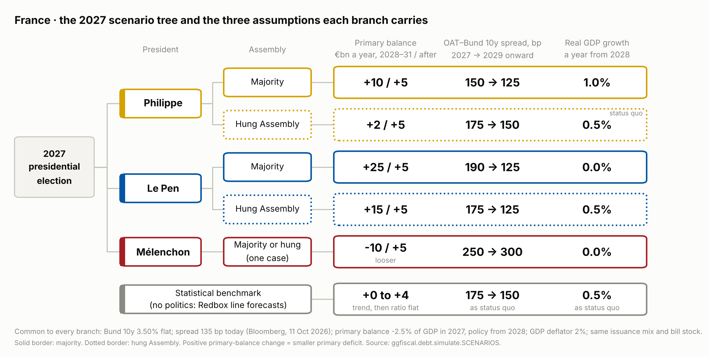
- Statistical benchmark (grey)
- Not a political scenario: Redbox's statistics-based forecast of the budget lines, summed into a balance (benchmark run 20261010T143609Z, anchored on 2024). The engine takes its year-on-year primary-balance changes for 2028–2031 and holds the ratio flat after 2031, where the benchmark ends; spread and growth as Philippe, hung.
- Philippe, majority
- Pension age and spending review delivered in part: primary balance €10bn a year better 2028–2031, then €5bn; real growth 1%; spread 150 bp in 2027, 125 bp from 2029.
- Philippe, hung (the status quo)
- Budgets by 49.3 with concessions: €2bn a year to 2031, then €5bn; growth 0.5%; spread 175 bp in 2027, 150 bp from 2029.
- Le Pen, majority
- The counter-budget enacted with slippage: €25bn a year to 2031 (€105bn by 2032 against the €140bn promised), then €5bn; growth 0% as the cuts bite; the spread spikes to 190 bp in 2027 and settles at 125 bp from 2029 once the cuts are seen to be delivered.
- Le Pen, hung
- An RN president without a majority passes part of the counter-budget: €15bn a year to 2031, then €5bn; growth 0.5%; spread 175 bp in 2027, 125 bp from 2029.
- Mélenchon
- Spending ahead of revenue: primary balance €10bn a year worse to 2031, then €5bn better; growth 0%; spread 250 bp in 2027 rising to 300 bp from 2029, about double the 2011–2012 monthly peak. A left-tail case, not a central one.
Scenario assumptions
| Scenario | 10y spread 2027, bp | 2028, bp | 2029 onward, bp | Primary balance change 2028–2031, €bn a year | From 2032, €bn a year | Real growth from 2028 | Nominal growth | Primary balance 2031, % GDP | 2035, % GDP |
|---|---|---|---|---|---|---|---|---|---|
| Statistical benchmark | 175 | 162.5 | 150 | +0 to +4* | ratio flat* | 0.5% | 2.5% | -2.0 | -2.0 |
| Philippe, majority | 150 | 137.5 | 125 | +10 | +5 | 1.0% | 3.0% | -1.1 | -0.5 |
| Philippe, hung Assembly | 175 | 162.5 | 150 | +2 | +5 | 0.5% | 2.5% | -2.0 | -1.3 |
| Le Pen, majority | 190 | 157.5 | 125 | +25 | +5 | 0.0% | 2.0% | +0.6 | +1.1 |
| Le Pen, hung Assembly | 175 | 150.0 | 125 | +15 | +5 | 0.5% | 2.5% | -0.5 | +0.0 |
| Mélenchon | 250 | 275.0 | 300 | -10 | +5 | 0.0% | 2.0% | -3.5 | -2.7 |
EUR bn changes are year on year in the primary balance outturn; positive is a smaller primary deficit. *The statistical benchmark moves in pp of GDP, not EUR bn: its 2028–2031 changes are shown converted to EUR bn, and after 2031 its primary balance is held constant as a share of GDP (see the benchmark table below). The status quo row is highlighted.
Assumptions common to every scenario
| Item | Assumption | Basis |
|---|---|---|
| 10-year Bund | 3.50% in every year to 2035 | committee, 11 Oct 2026 |
| Rest of the Bund curve | 3m 2.50%, 2y 3.00%, 5y 3.25%, 30y 3.85%, flat | 2y–30y moved with the 10y; 3m anchored to the ECB |
| OAT–Bund 10y today | 135 bp (11 Oct 2026), applied to the rest of 2026 and drawn as the last point of the actual line | Bloomberg; the bundle's monthly series ends at 101 bp in September 2026 |
| Spread path | Annual average: the scenario's 2027 level, a straight line to its 2029 level (2028 = midpoint), flat to 2035 | committee |
| Spread term structure | 0.15 / 0.45 / 0.75 / 1.00 / 1.15 × the 10y spread at 3m / 2y / 5y / 10y / 30y | declared (unchanged) |
| Spread feedback from debt | None | the spread paths are declared in full |
| Fiscal variable | The primary balance (before interest); interest is computed from the register | committee |
| Primary balance 2025–2027 | −3.1%, −2.7%, −2.5% of GDP in every scenario | 2025 outturn; the 2027 budget is voted before the election |
| Start of scenario policy | 2028 | committee |
| Reading of the EUR bn changes | Year-on-year change in the outturn; weaker growth does not also cut revenue | committee |
| After 2031 | +€5bn a year in the five political cases; ratio flat in the statistical benchmark | committee; the benchmark ends in 2031 |
| Nominal GDP 2026–2027 | €3,056bn and €3,151bn in every scenario | EC AMECO spring 2026 (strict file) |
| Real growth from 2028 | By scenario (table above) | committee |
| GDP deflator from 2028 | 2.0% a year | committee |
| Inflation for linker uplift | 2.0% a year | declared |
| Issuance rule | The maturity profile of the stock is held constant: bills 7.6% of the negotiable stock and each residual-maturity bucket at its end-2026 share; the same in every scenario. A bucket already above its share receives nothing (no buybacks), so the two shortest buckets, fed by ageing, overshoot by €72bn in 2030 and €109bn in 2035 in the status quo. | committee, D-S18-006; the AFT 2025 mix with a €215bn bill stock stays selectable (issuance_rule) |
| Mélenchon's Assembly | Not specified; one case | committee: does not matter for the arithmetic |
| Reference for Figure 9 | Philippe, hung Assembly (the status quo) | committee |
| Debt at end-2025 | 115.6% of GDP; debt accumulates the deficit, no stock-flow adjustment | INSEE / Eurostat |
| Chart history | From 2010 on every scenario chart; debt history Eurostat gov_10dd_edpt1 (S13, GD) | committee; data/manual, retrieved 11 Oct 2026 |
| Chart colours | Philippe yellow, Le Pen French blue, Mélenchon dark red, statistical benchmark grey, outturn black; majority solid, hung Assembly dotted | committee |
The statistical benchmark, year by year
What the engine takes from benchmark_balance.csv. The benchmark is anchored on 2024 and does not yet see the 2025 outturn (a deficit of 5.1%, not its 5.7%), so its level is not used: only its year-on-year changes in the primary balance from 2028, applied to the common 2027 starting point. Its interest line is the EC path the strict file carries, so its primary balance is the benchmark balance plus that interest, less 0.2% of GDP of interest receivable.
| Year | Benchmark deficit, % GDP | 80% interval | Interest (GF01_7), % GDP | Implied primary balance, % GDP | Change, pp | Used by the engine | Engine primary balance, % GDP |
|---|---|---|---|---|---|---|---|
| 2025 | 5.7 | 4.4 to 7.0 | 2.2 | -3.7 | – | no | – |
| 2026 | 5.8 | 3.4 to 8.2 | 2.5 | -3.5 | +0.20 | no | -2.7 |
| 2027 | 5.9 | 3.1 to 8.7 | 2.7 | -3.4 | +0.10 | no | -2.5 |
| 2028 | 6.0 | 2.8 to 9.1 | 3.0 | -3.2 | +0.17 | yes | -2.3 |
| 2029 | 6.1 | 2.5 to 9.6 | 3.2 | -3.0 | +0.18 | yes | -2.2 |
| 2030 | 6.3 | 2.4 to 10.1 | 3.5 | -3.0 | +0.06 | yes | -2.1 |
| 2031 | 6.5 | 2.3 to 10.6 | 3.7 | -2.9 | +0.06 | yes | -2.0 |
Redbox: benchmark_balance.csv (run 20261010T143609Z, D-S11-002); ggfiscal.debt.simulate.benchmark_pb_changes. From 2032 the engine holds the 2031 ratio, -2.0% of GDP.
The RN counter-budget against the Le Pen-majority path
| Item | RN promise (6 Oct 2026) | Le Pen-majority path in the engine |
|---|---|---|
| Net savings | €140bn by 2032, against 2026 | €25bn a year 2028–2031, €5bn in 2032: €105bn by 2032 |
| Deficit | Below 3% of GDP in 2030 | 3.8% in 2030; lowest 3.3% in 2031 |
| Debt | 121% of GDP in 2027, 112% in 2032 | 120% in 2027, 127% in 2032 |
| Growth | Not stated | 0% real from 2028 |
| Spread | — | 190 bp in 2027, 125 bp from 2029 |
RN: franceinfo and Public Sénat, 6 Oct 2026 ext; no independent costing published.
| Scenario | Spread 2030, bp | 10y OAT 2030 | GG interest 2028, €bn | 2030, €bn | 2030, % GDP | 2035, €bn | 2035, % GDP | Deficit 2030, % GDP | Debt 2030, % GDP | Debt 2035, % GDP | Gross OAT issuance 2030, €bn |
|---|---|---|---|---|---|---|---|---|---|---|---|
| Statistical benchmark | 150 | 5.0% | 104 | 136 | 4.0 | 212 | 5.5 | 5.9 | 128 | 145 | 468 |
| Philippe, majority | 125 | 4.8% | 103 | 131 | 3.8 | 193 | 4.8 | 5.0 | 124 | 131 | 446 |
| Philippe, hung Assembly | 150 | 5.0% | 105 | 136 | 4.0 | 210 | 5.5 | 6.0 | 128 | 144 | 470 |
| Le Pen, majority | 125 | 4.8% | 104 | 130 | 3.9 | 177 | 4.8 | 3.8 | 125 | 130 | 408 |
| Le Pen, hung Assembly | 125 | 4.8% | 104 | 131 | 3.9 | 188 | 4.9 | 4.7 | 125 | 133 | 434 |
| Mélenchon | 300 | 6.5% | 109 | 155 | 4.7 | 280 | 7.6 | 7.7 | 133 | 166 | 516 |
Redbox: ggfiscal.debt.simulate, run at the 10 September 2026 register, scenarios of 11 October 2026; the status quo is highlighted, the statistical benchmark is the first row. Interest is general government on the accrual basis (GF01_7 concept). Gross issuance is medium/long-term including the buybacks the register cannot see, so it overstates the AFT's programme definition by roughly the buyback volume (€25–40bn a year).


Reading the map as a holder
Three things follow. First, the distribution of outcomes for the interest bill is skewed the other way from what the polls suggest: against the status quo, the three Philippe-majority and Le Pen cases save €17–33bn a year by 2035, and Mélenchon costs €71bn. A position sized on the status quo is short a put on a left-wing presidency, and long a call on RN fiscal delivery that the market does not yet credit. Second, the 2027 spread is the near-term risk in every case except a Philippe majority: 175–190 bp is above today's 135 bp, and a hung Assembly under either president means budgets by 49.3 and a spread that does not come back below 125–150 bp. Third, no case is a solvency case on this arithmetic except, eventually, Mélenchon: debt at 166% of GDP in 2035 with interest at 7.6% is past Italy in 2012. The others end at 130–144% with interest at 4.8–5.5%. Every case becomes a solvency question only if the pricing loop runs faster than the fiscal loop, which is a question about the ECB and the marginal buyer, not about French arithmetic. That is why the questions in section 9 are about exits, not about levels.
6Other things that matter in the room
Ratings and the crossover. France is A+ stable at S&P (October 2025) and Fitch (September 2025), AA at DBRS, Aa3 negative at Moody's and AA- negative at Scope ext. Italy is on an upgrade path. A Moody's downgrade to A1 would put France at single-A at three of the four agencies that matter for index weights and repo schedules, and the OAT–BTP inversion of August 2026 says the market has already priced that crossover; some analysts had the OAT–Bund spread at 105 bp by end-Q1 2027 on it ext, a level it passed in October 2026. Worth asking the AFT what feedback it has had from index providers and from the ECB collateral desk on the single-A question.
The EDP and the Commission. The procedure opened in July 2024; the January 2025 Council recommendation caps net expenditure growth at 0.8% (2025) and 1.2% (2026–2028) with correction by 2029, and the Commission's spring 2026 forecast (deficit 5.1% in 2026, debt 118.1% at end-2026) has France off the path ext. No scenario in section 5 corrects by 2029. The interaction with the TPI conditions is the reason this is more than a compliance question.
The PLF 2027. The 2026 budget passed on 2 February 2026 by 49.3 after two censure motions failed, at a 5.0% deficit (from 4.6% planned) with concessions to the PS and €6.5bn more for defence ext. The PLF 2027 is presented within weeks and is the last budget before the election: the AFT's 2027 financing programme (published in December) will be built on it. The AFT's Chief Economist will know the assumed 2027 deficit and the debt-service line; they are the numbers to get.
Data the AFT could give and does not. Redbox's French chains are blocked at step A because the État's own cash interest and financing tables (PLF programme 117, the tableau de financement) are not machine-readable to us (OQ-8), and the register is gross of buybacks because rachats are published only in aggregate. Per-line buyback volumes and the programme-117 tables would close the French interest chain to the euro. A request in the room costs nothing.
The CADES and the social perimeter. Eurostat's S.1311 securities run €43bn above the AFT's État total at end-2025 (Figure 1): CADES and the other central bodies. CADES' amortisation schedule (to 2033) is a hidden source of negotiable-debt demand replacement in the late 2020s, and a Le Pen pension rollback would reopen the question of who funds the social deficit.
7The other side of the balance sheet: cash, net debt and what could be sold
Everything before this point reads sustainability off the Maastricht stock: a gross liability at face value, rolled forward by the deficit. This section asks the question a defender of France would ask back. The state owns things. It holds cash, paper, loans and a large equity book; it is paid interest and dividends on them; it has the Caisse des dépôts, the Banque de France's gold and the public enterprises behind it; and in a crisis it could sell. If all of that is counted, as generously as the official numbers allow, how much better does the arithmetic look, and what could actually be turned into cash? The answer, in one line: the asset side moves the level of the debt ratio by 7.2 points on the standard definition and by far more on a heroic one, and it takes 0.4% of GDP off the interest bill; it does not change the slope. Every path still rises, because the primary deficit is still there. Selling assets lowers the slope only through the interest saved, and the runs below show how much that is worth.
What the state owns
Eurostat's financial balance sheet of general government Redbox (S13, consolidated, market value, updated 2026-07-21) puts French public financial assets at €1,298bn at end-2025, 43.4% of GDP: currency and deposits €75bn, debt securities €36bn, loans granted €105bn, equity and investment-fund shares €774bn (of which fund shares €161bn), and €298bn of other receivables, mostly tax and social contributions accrued but not yet collected, which nobody can sell. The equity line is the one that matters and the one to be careful with: it values the state's unlisted holdings (EDF, SNCF, La Poste, RATP, Bpifrance, the Caisse des dépôts and the Banque de France itself) at their own funds, not at a price a buyer would pay, and it includes the reserves of the social-security funds (the FRR, AGIRC-ARRCO, CNAV), which are inside general government but belong to the schemes. The listed part is small: the APE's ten quoted lines were worth €67.9bn at 30 June 2025 out of a portfolio it values at €209.1bn ext. Non-financial assets, roads, schools, hospitals, barracks and the land under them, come to another €2,945bn at replacement cost; they are the public service, not a reserve.
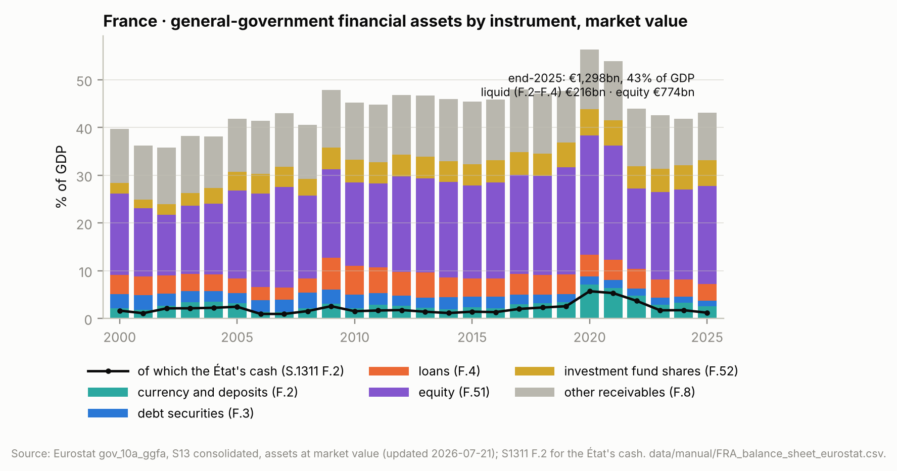
The cash at the Banque de France. The État's cash is the one asset that answers a refinancing scare, and it is small. The Compte général de l'État puts the État's trésorerie active, essentially the Treasury's single account at the Banque de France plus short-term placements, at €22.9bn at end-2025, down from €38.0bn a year earlier ext; Eurostat's consolidated S.1311 currency and deposits give €36bn (€50bn at end-2024), and INSEE notes that the fall in cash (−€19.9bn across general government) was part of how 2025 was financed ext. Against that stand €150bn of trésorerie passive: the deposits of the correspondants du Trésor (local authorities, public bodies) that the account holds for them. The cash buffer is therefore a few weeks of the AFT's gross programme, and it was €164bn at the S13 level in 2020 when it was deliberately built. The AFT has the balance to the day and the account's intra-year profile; it is worth asking what floor it works to now that the 2027–2029 redemptions are in sight.
Net debt
INSEE's net debt is gross Maastricht debt less the deposits, debt securities and loans the government holds. Rebuilt from the Eurostat tables Redbox it is 108.5% of GDP at end-2025 against 115.7% gross, €3,244bn against INSEE's published €3,245.5bn (108.4%) ext, a €1.0bn difference on the valuation of the paper held. By sub-sector INSEE gives the État €2,823bn gross and €2,727bn net, the social-security funds €293bn gross and €220bn net, local government €276bn and €261bn: the État, which carries the market risk, has almost nothing liquid against its stock, and the netting is mostly the social reserves. Netting the equity book at market as well, which no statistical office does and the heroic view would, takes the ratio to 82.6%. Eurostat's own bottom line, net financial worth, is −€2,187bn (−73.1% of GDP), because the liabilities are at market value too.
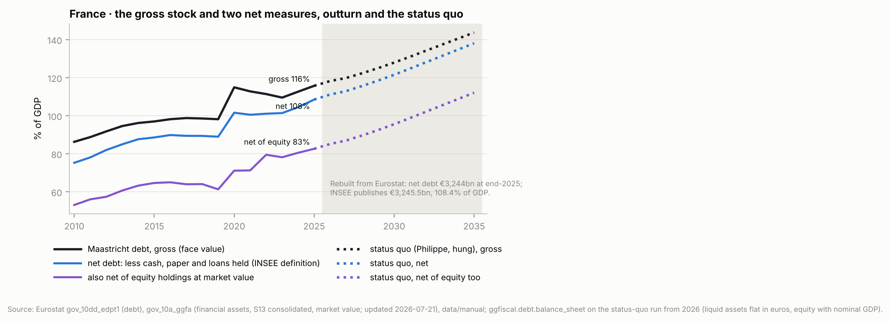
The income the assets pay
General government paid €67bn of interest in 2025 (D.41, Eurostat, 2.2% of GDP) and received €3.9bn of interest and €9.4bn of dividends (D.41 and D.42 receivable; rents of €6.2bn are left aside as income on land, not on financial assets) Redbox. Net interest is therefore €53bn, 1.8% of GDP, and the effective rate on net debt 1.74% against 2.02% on gross. Two things about that income: it is low, €13.4bn on €1,298bn of assets, a cash yield of 1.72% on the liquid block and a dividend yield of 1.28% on the equity book (the equity's return has been in revaluation, 10.6% a year since 2022, which the deficit never sees); and it is already in the deficit. The engine nets interest receivable in every scenario and the dividends sit inside the primary balance, so counting the asset income does not change a single deficit or debt number in section 5. What it changes is the label: the primary balance France must run is 0.4% of GDP smaller than it looks once the assets' income is on the other side of the ledger, and the interest bill that matters for the r−g arithmetic is the net one.
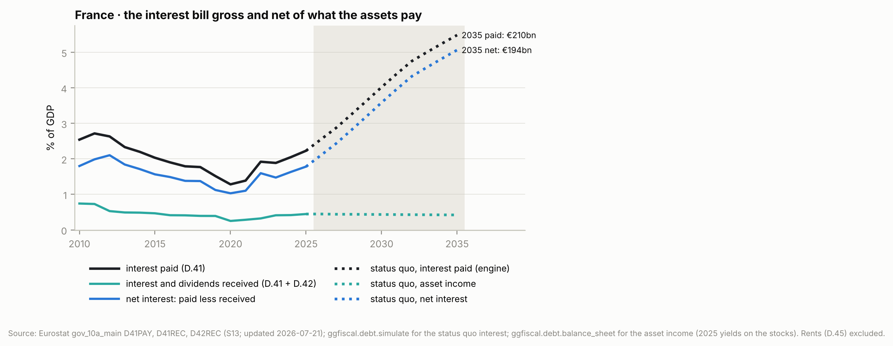
The debt-stabilising primary balance says the same thing in one number. In 2030 on the status quo, with nominal growth of 2.5%, the effective rate on gross debt is 3.3% and the balance that holds the gross ratio flat is +1.0% of GDP; on net debt and net interest it is +0.7%. The engine's status quo runs -2.1%. The generous view narrows the required adjustment by 0.3 points of GDP, from 3.1 to 2.8: real, and not the story.
Debt that moved without a deficit: the stock-flow adjustment
The engine's identity, debt rises by the deficit, is the historical norm for France but not the rule. Over 1999–2025 the stock-flow adjustment (Δdebt plus net lending) averaged 0.21% of GDP a year Redbox, with two kinds of exception: the years when the state built cash (€69bn in 2020, €34bn in 2024, when it also booked the deficit's accruals and discounts) and the years when it ran cash down or sold (2006, 2010, 2012–2016). The Eurostat EDP table carried in the bundle breaks the État's 2021–2025 adjustment into its parts; the table below flips the chain's sign so that positive adds to debt. Cash dominates the swings, issuance premia and discounts are the second term (the AFT re-opens old low-coupon lines below par, which raises face-value debt by more than the cash raised: −€14bn in 2025), and equity injections are small in every year but 2023. From this release the engine carries a declared stock-flow adjustment per scenario (Scenario.sfa_bn); the committee's six scenarios declare none, which is the mean, and the runs below use it for the sales.
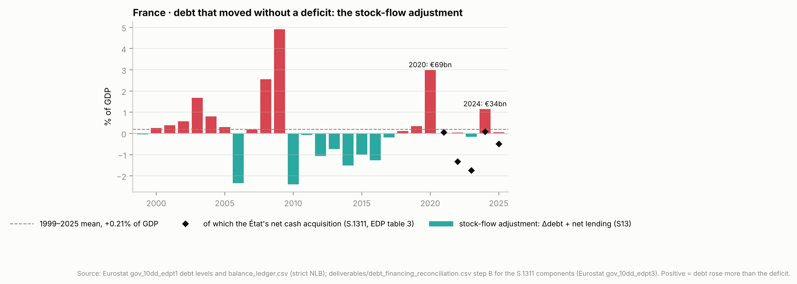
| Year | Cash and deposits | Securities and loans | Equity injections | Other receivables | Issuance premia, accruals | Other | État SFA |
|---|---|---|---|---|---|---|---|
| 2021 | +1.6 | +1.8 | +3.0 | +11.9 | -4.3 | +19.1 | +33.1 |
| 2022 | -35.1 | +1.9 | -5.7 | +9.6 | +26.5 | -4.2 | -7.0 |
| 2023 | -49.4 | -2.6 | +8.9 | +3.3 | +29.8 | -14.1 | -24.1 |
| 2024 | +2.4 | -2.1 | -0.3 | +4.4 | +17.1 | -12.9 | +8.6 |
| 2025 | -14.7 | -2.7 | +3.5 | +6.6 | +14.4 | -12.9 | -5.7 |
S.1311, EUR bn, from deliverables/debt_financing_reconciliation.csv step B (Eurostat gov_10dd_edpt3), sign flipped so that positive = debt rose more than net borrowing. Other receivables are mostly tax credits and accrued revenue; "other" includes the deposits the Trésor takes from its correspondants, which are debt in Maastricht terms.
The sell-down ladder
What could be sold, in an extreme stress, to retire debt? The table below lists every asset the state could sell or run down, line by line: valued on the État's own certified accounts (the Compte général de l'État 2025, for the unlisted holdings at the État's share of their own funds, the loans, the cash and the buildings), on the APE's portfolio valuation at 30 June 2025 for the listed lines, on each scheme's own accounts for the pension reserves, and on the CDC's and the Banque de France's 2025 accounts; with who holds it, whether the État has the right to sell it (yes; law, a statute must change; no, it is not the État's), how fast it turns into cash, and what it pays the État each year. The last column gives what three runs sell, by the committee's rules of 14 October 2026 (the rule is printed under each amount): a liquidity drawdown (the cash buffer above €10bn and the État's paper), a realistic sell-down (the same, plus half of every listed line the État is free to sell and €2bn of the État's own funds), and a distress run, everything the État can reach with a law (the whole cash buffer, every listed line in whole or half where a pact binds, half the recoverable loans, the enterprises it owns outright at book, half of everything a statute protects — SNCF, Bpifrance, La Poste, RATP, the FRR, Ircantec, the ODAC books, the CDC's two sections, the motorway concessions — and nothing that is not the État's). These amounts drive Figure 22 and the runs table. On the committee's three questions: the public enterprises are on the balance sheet already, as equity at the État's share of their own funds (EDF €237bn of controlled entities in all), so selling them is a sale of that line and the book value is a ceiling, not a price; the Caisse des dépôts is outside general government, its €76bn of group equity overlaps La Poste and Bpifrance, the État's claim on it is the annual versement (€3.3bn in 2025, set by decree) and the own funds of its two sections are the Caisse's unless Parliament says otherwise; the Banque de France's gold (€257bn, 2,437 tonnes) is the Banque's, needs the ECB's assent to sell, and reaches the Trésor only as a dividend on realised gains, which has been nil since 2022 ext.
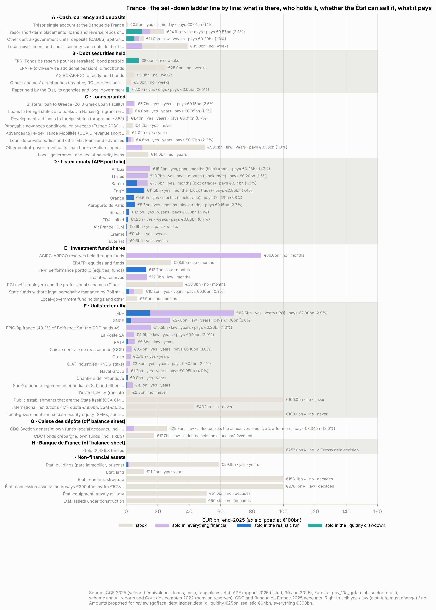
| Line | Holder | Stock, €bn | Valuation basis (date) | Can sell? | Liquidity | Income to État, €bn/yr | Yield, % | Sold: liquidity / realistic / distress, €bn (rule) | Note |
|---|---|---|---|---|---|---|---|---|---|
| A · Cash: currency and deposits | |||||||||
| Trésor single account at the Banque de France ext | État (AFT) | 0.9 | CGE note 15: compte courant du Trésor, 31 Dec 2025 (€1.9bn a year earlier) (2025-12-31) | yes | same day | 0.01 | 1.1 | 0.0 / 0.0 / 0.0 as declared | The operating balance; the AFT keeps it near zero and parks the buffer in placements (next line). |
| Trésor short-term placements (loans and reverse repos of État cash) ext est | État (AFT) | 24.1 | CGE note 15: placements de trésorerie, 31 Dec 2025 (€38.3bn a year earlier); Eurostat books most of this as F.4 short-term loans (2025-12-31) | yes | days | 0.55 | 2.3 | 10.0 / 10.0 / 24.1 committee: stated | The real cash buffer. Run down to a €10bn floor in the liquidity and realistic runs, €9bn in the distress run; INSEE: general-government cash fell €19.9bn in 2025 already. |
| Other central-government units' deposits (CADES, Bpifrance EPIC, agencies, universities) est | ODAC | 11.0 | Eurostat S.1311 F.2 consolidated (€36.0bn) less the État's own cash above; not itemised by any source reached (2025-12-31) | law | weeks | 0.20 | 1.8 | 0.0 / 0.0 / 10.0 committee: stated | Most public bodies must already deposit at the Trésor; what sits at banks could be centralised by extending the deposit obligation. |
| Local-government and social-security cash outside the Trésor est | S.1313, S.1314 | 39.0 | Eurostat S.13 consolidated F.2 (€75.1bn) less S.1311 (€36.0bn): the sub-sectors' bank deposits net of what they hold at the Trésor (2025-12-31) | no | weeks | 0.00 | 0.0 | 0.0 / 0.0 / 0.0 no -> 0/0/0 | Not the État's money. The distress run assumes a law extending the Trésor deposit obligation to the social-security funds' and schemes' working cash (€10bn). |
| Subtotal | 75.0 | 0.76 | 10.0 / 10.0 / 34.1 | ||||||
| B · Debt securities held | |||||||||
| FRR (Fonds de réserve pour les retraites): bond portfolio ext est | FRR, S.1314 | 8.0 | FRR net assets €20.7bn at end-2025 (annual report), of which about 40% in the hedging (bond) portfolio — Redbox split (2025-12-31) | law | weeks | 0.00 | 0.0 | 0.0 / 0.0 / 4.0 law -> 0/0/half | The FRR is a public establishment whose assets the 2010 and 2020 social-security laws earmark to CADES (€1.45bn a year to 2033). Parliament has redirected them twice; it can again. The return (9.1% in 2025) accrues to the fund, not the budget. |
| ERAFP (civil-service additional pension): direct bonds ext est | ERAFP, S.1314 | 25.0 | ERAFP net assets €53.6bn at end-2025 (annual report), about 45% in directly held bonds — Redbox split (2025-12-31) | no | weeks | 0.00 | 0.0 | 0.0 / 0.0 / 0.0 no -> 0/0/0 | A funded scheme: the assets back civil servants' accrued points (coverage ratio 146%). Taking them would be a default on the scheme's members, not a sale. |
| AGIRC-ARRCO: directly held bonds ext est | AGIRC-ARRCO, S.1314 | 5.0 | Reserves €91.2bn at end-2025 (2025 accounts); mostly held through dedicated funds (group E); a small direct bond book — Redbox split (2025-12-31) | no | weeks | 0.00 | 0.0 | 0.0 / 0.0 / 0.0 no -> 0/0/0 | Paritarian scheme under private law; the reserves are the scheme's. See group E for the bulk. |
| Other schemes' direct bonds (Ircantec, RCI, professional schemes) est | S.1314 | 3.0 | Residual of Eurostat S.1314 F.3 (€43bn) after the three lines above (2025-12-31) | no | weeks | 0.00 | 0.0 | 0.0 / 0.0 / 0.0 no -> 0/0/0 | Reserves of the complementary and professional schemes; theirs. |
| Paper held by the État, its agencies and local government | S.1311, S.1313 | 2.0 | Eurostat S.1311 F.3 (€1bn) + S.1313 F.3 (€1bn) (2025-12-31) | yes | days | 0.05 | 2.5 | 2.0 / 2.0 / 2.0 as declared | Negligible; sold in every run. |
| Subtotal | 43.0 | 0.05 | 2.0 / 2.0 / 6.0 | ||||||
| C · Loans granted | |||||||||
| Bilateral loan to Greece (2010 Greek Loan Facility) ext | État | 5.7 | CGE note 8.3: outstanding principal after €5.7bn of repayments (2025-12-31) | yes | years | 0.15 | 2.6 | 0.0 / 0.0 / 2.8 yes, loan -> 0/0/half | Transferable in principle under the 2010 intercreditor agreement; no market. Pays 3-month Euribor + 50 bp. Counted in the distress run as a securitisation. |
| Loans to foreign states and banks via Natixis (programme 851, export-linked) ext est | État | 4.0 | CGE note 8.3: gross; €0.9bn of impairment sits across the foreign-loan lines (2025-12-31) | yes | years | 0.05 | 1.3 | 0.0 / 0.0 / 2.0 yes, loan -> 0/0/half | Concessional, tied to French exports; securitisable at a deep discount. |
| Development-aid loans to foreign states (programme 852) ext | État | 1.4 | CGE note 8.3 (2025-12-31) | yes | years | 0.01 | 0.7 | 0.0 / 0.0 / 0.7 yes, loan -> 0/0/half | Concessional; many under debt-relief (C2D) contracts. |
| Repayable advances conditional on success (France 2030, PIA, aerospace programmes) ext | État | 4.2 | CGE note 8.3 (2025-12-31) | yes | never | 0.00 | 0.0 | 0.0 / 0.0 / 0.0 yes, loan -> 0/0/half | Repaid only if the financed project succeeds; no buyer. |
| Advances to Île-de-France Mobilités (COVID revenue shortfall) ext | État | 2.0 | CGE note 8.3 (2025-12-31) | yes | years | 0.00 | 0.0 | 0.0 / 0.0 / 1.0 yes, loan -> 0/0/half | Repayable by a public body on a schedule; intra-public. |
| Loans to private bodies and other État loans and advances ext est | État | 4.6 | CGE note 8.3: organismes privés €3.5bn, other €0.4bn, local authorities €0.1bn, individuals, accrued interest (2025-12-31) | yes | years | 0.10 | 2.2 | 0.0 / 0.0 / 2.3 yes, loan -> 0/0/half | Mixed book; securitisable in part. |
| Other central-government units' loan books (Action Logement Services' housing loans, State funds managed by Bpifrance and the CDC, agencies) est | ODAC | 50.0 | Eurostat S.1311 F.4 (€93bn) less the État's loans above (€18.8bn net) and the Trésor's placements (group A); Action Logement's loan book was €10.9bn in 2022 (2025-12-31) | law | years | 0.50 | 1.0 | 0.0 / 0.0 / 25.0 law -> 0/0/half | Not itemised by any source reached. Mostly housing and SME loans at below-market rates; securitisable at a discount; counted €10bn in the distress run. |
| Local-government and social-security loans | S.1313, S.1314 | 14.0 | Eurostat S.1313 F.4 (€12bn) + S.1314 F.4 (€2bn) (2025-12-31) | no | years | 0.00 | 0.0 | 0.0 / 0.0 / 0.0 no -> 0/0/0 | Loans to their own satellites; not the État's. |
| Subtotal | 85.8 | 0.81 | 0.0 / 0.0 / 33.8 | ||||||
| D · Listed equity (APE portfolio) | |||||||||
| Airbus ext est | État 10.83% via SOGEPA | 15.2 | APE figure 5, market value at 30 June 2025 (2025-06-30) | yes, pact | months (block trade) | 0.26 | 1.7 | 0.0 / 0.0 / 7.6 yes, pact -> 0/0/half | The Franco-German-Spanish shareholder pact fixes the three states' parity; a French sale would need Berlin and Madrid to follow or waive. Defence. Dividend: 10.83% of 790m shares × €3.00 paid in 2025. |
| Thales ext est | État 26.60% via TSA | 13.7 | APE figure 5, market value at 30 June 2025 (2025-06-30) | yes, pact | months (block trade) | 0.20 | 1.5 | 0.0 / 0.0 / 6.8 yes, pact -> 0/0/half | Shareholder pact with Dassault Aviation; golden-share-type rights on the defence business. The State's veto, not the stake, is what matters. Dividend: 26.60% of 206m shares × €3.70 paid in 2025. |
| Safran ext est | État 11.20% | 13.5 | APE figure 5, market value at 30 June 2025 (2025-06-30) | yes | months (block trade) | 0.14 | 1.0 | 0.0 / 6.8 / 13.5 yes, listed -> 0/half/whole | No pact; the State keeps board seats by decree. Half sold in the realistic run. Dividend: 11.20% of 420m shares × €2.90 paid in 2025. |
| Engie ext est | État 23.64% | 11.5 | APE figure 5, market value at 30 June 2025 (2025-06-30) | yes | months (block trade) | 0.85 | 7.4 | 0.0 / 5.7 / 11.5 yes, listed -> 0/half/whole | The 2015 law lets the State go below a third; no blocking rule. Sold whole in the realistic run. Dividend: 23.64% of 2,435m shares × €1.48 paid in 2025. |
| Orange ext est | État 13.39% (Bpifrance holds another 9.6%) | 4.6 | APE figure 5, market value at 30 June 2025 (2025-06-30) | yes | months (block trade) | 0.27 | 5.8 | 0.0 / 2.3 / 4.6 yes, listed -> 0/half/whole | No legal floor; sold whole in the realistic run. Dividend: 13.39% of 2,660m shares × €0.75 paid in 2025. |
| Aéroports de Paris ext est | État 50.63% | 5.5 | Redbox split of the APE residual (€67.9bn total, €9.4bn unallocated), stake × market capitalisation at 30 June 2025 (2025-06-30) | yes | months (block trade) | 0.15 | 2.7 | 0.0 / 2.8 / 5.5 yes, listed -> 0/half/whole | The 2019 PACTE law authorised the privatisation; the 2019 referendum petition stalled it politically. Sold whole in the realistic run. Dividend: 50.63% of 99m shares × €3.00 paid in 2025. |
| Renault ext est | État 15.01% | 1.9 | Redbox split of the APE residual (€67.9bn total, €9.4bn unallocated), stake × market capitalisation at 30 June 2025 (2025-06-30) | yes | weeks | 0.10 | 5.1 | 0.0 / 0.9 / 1.9 yes, listed -> 0/half/whole | Alliance pact with Nissan limits a sale's timing, not its possibility. Dividend: 15.01% of 295m shares × €2.20 paid in 2025. |
| FDJ United ext est | État 20.46% | 1.2 | Redbox split of the APE residual (€67.9bn total, €9.4bn unallocated), stake × market capitalisation at 30 June 2025 (2025-06-30) | yes | weeks | 0.08 | 6.7 | 0.0 / 0.6 / 1.2 yes, listed -> 0/half/whole | The 2019 law sets no floor; the State keeps the regulatory grip through the gambling licence. Dividend: 20.46% of 191m shares × €2.05 paid in 2025. |
| Air France-KLM ext est | État 27.98% | 0.6 | Redbox split of the APE residual (€67.9bn total, €9.4bn unallocated), stake × market capitalisation at 30 June 2025 (2025-06-30) | yes, pact | weeks | 0.00 | 0.0 | 0.0 / 0.0 / 0.3 yes, pact -> 0/0/half | Parity with the Dutch state; no dividend; sold in the realistic run at a small value. |
| Eramet ext est | État 27.13% via FSI Equation | 0.4 | Redbox split of the APE residual (€67.9bn total, €9.4bn unallocated), stake × market capitalisation at 30 June 2025 (2025-06-30) | yes | weeks | 0.00 | 0.0 | 0.0 / 0.2 / 0.4 yes, listed -> 0/half/whole | Pact with the Duval family; critical minerals. No 2024 dividend. |
| Eutelsat ext est | État 29.65% (acquired July 2025) | 0.6 | CGE 2025 note 8.1.2.3: net book value €597m on a €1,008m cost, market value at 30 June 2025 (2025-06-30) | yes | weeks | 0.00 | 0.0 | 0.0 / 0.3 / 0.6 yes, listed -> 0/half/whole | Bought after the APE's June 2025 valuation; sovereignty asset; no dividend. |
| Subtotal | 68.7 | 2.04 | 0.0 / 19.6 / 53.9 | ||||||
| E · Investment fund shares | |||||||||
| AGIRC-ARRCO reserves held through funds ext est | AGIRC-ARRCO, S.1314 | 86.0 | Reserves €91.2bn at end-2025 (2025 accounts) less the direct bonds in group B — Redbox split (2025-12-31) | no | months | 0.00 | 0.0 | 0.0 / 0.0 / 0.0 no -> 0/0/0 | The paritarian complementary scheme's buffer (about nine months of benefits). The State tried to take €1–3bn a year in 2023 and backed down; the reserves are the social partners'. The distress run assumes a law taking them, which the Conseil constitutionnel might not allow. Return accrues to the scheme (about 3% a year in cash income). |
| ERAFP: equities and funds ext est | ERAFP, S.1314 | 28.6 | ERAFP net assets €53.6bn less the direct bonds in group B — Redbox split (2025-12-31) | no | months | 0.00 | 0.0 | 0.0 / 0.0 / 0.0 no -> 0/0/0 | Funded rights; see group B. |
| FRR: performance portfolio (equities, funds) ext est | FRR, S.1314 | 12.7 | FRR net assets €20.7bn less the bond portfolio in group B — Redbox split (2025-12-31) | law | months | 0.00 | 0.0 | 0.0 / 0.0 / 6.3 law -> 0/0/half | As group B: Parliament's to redirect. Sold whole in the realistic run (it is already being drawn down for CADES). |
| Ircantec reserves ext | Ircantec (managed by the CDC), S.1314 | 12.9 | Cour des comptes 2022: €12.9bn at end-2020 market value; no 2025 figure reached (2020-12-31) | law | months | 0.00 | 0.0 | 0.0 / 0.0 / 6.5 law -> 0/0/half | A public scheme for contractual public employees, piloted by decree; a law could take the reserves, which back no individual rights. Counted in the distress run only. |
| RCI (self-employed) and the professional schemes (Cipav, Carmf, CRPNPAC and others) ext est | S.1314 | 36.0 | Cour des comptes 2022: RCI €17.1bn, Cipav €7.2bn, Carmf €6.4bn, CRPNPAC €5.2bn at end-2020 market value, plus smaller schemes; residual to Eurostat S.1314 F.5 (2020-12-31) | no | months | 0.00 | 0.0 | 0.0 / 0.0 / 0.0 no -> 0/0/0 | Reserves of autonomous schemes funded by their members; not counted in any run. |
| State funds without legal personality managed by Bpifrance and the CDC (France 2030, PIA, guarantee funds) ext | État | 10.8 | CGE note 8.4: FSPJ at net asset value — Bpifrance €8.2bn (guarantee funds €3.6bn, France 2030/PIA funds €3.6bn), CDC €2.6bn (2025-12-31) | yes | years | 0.10 | 0.9 | 0.0 / 2.0 / 5.0 as declared | The État's own. The guarantee funds back live guarantees; the investment funds hold venture stakes saleable over years. |
| Local-government fund holdings and other est | S.1313, other | 7.0 | Residual of Eurostat S.13 F.52 (€161bn) after the lines above (2025-12-31) | no | months | 0.00 | 0.0 | 0.0 / 0.0 / 0.0 no -> 0/0/0 | Residual; not the État's. |
| Subtotal | 194.0 | 0.10 | 0.0 / 2.0 / 17.8 | ||||||
| F · Unlisted equity | |||||||||
| EDF ext | État 100% | 68.5 | CGE note 8.1.1: valeur d'équivalence (État's share of own funds, TSDI excluded since 2024) (2025-12-31) | yes | years (IPO) | 2.00 | 2.9 | 0.0 / 0.0 / 68.5 yes, unlisted -> 0/0/whole | Dividend €2.0bn paid in 2025 for 2024 (the first in ten years), €1.0bn for 2025. Re-listing a minority is possible (the 2023 buy-out cost €9.7bn for 16%); the realistic run sells a quarter at a discount to equity value. Nuclear liabilities make the book value the ceiling, not the price. |
| SNCF ext est | État 100% | 27.8 | CGE note 8.1.1: valeur d'équivalence (with reservation on the accounts) (2025-12-31) | law | years | 1.00 | 3.6 | 0.0 / 0.0 / 13.9 law -> 0/0/half | The 2018 railway law makes SNCF SA's capital inalienable; subsidiaries (Geodis, Keolis 70%) are saleable, hence €3bn in the realistic run. The dividend (about €1bn a year) is recycled into SNCF Réseau through the fonds de concours, so the État's net income is nil. |
| EPIC Bpifrance (49.3% of Bpifrance SA; the CDC holds 49.3%) ext est | État 100% of the EPIC | 15.5 | CGE note 8.1.1: valeur d'équivalence (2025-12-31) | law | years | 0.20 | 1.3 | 0.0 / 0.0 / 7.8 law -> 0/0/half | Bpifrance SA's statute and the CDC's parity make a private sale a legislative project; its dividend to the EPIC is small (net profit €0.5bn in 2025). |
| La Poste SA ext est | État 34% (CDC 66%) | 4.9 | CGE note 8.1.2.3: net book value (2025-12-31) | law | years | 0.10 | 2.0 | 0.0 / 0.0 / 2.5 law -> 0/0/half | The 2010 law requires a wholly public shareholding; a sale to the CDC is intra-public and raises nothing consolidated. Dividend to the État about €0.1–0.15bn (FY2022: €421m in total). |
| RATP ext | État 100% (EPIC) | 5.6 | CGE note 8.1.1: valeur d'équivalence (2025-12-31) | law | years | 0.00 | 0.0 | 0.0 / 0.0 / 2.8 law -> 0/0/half | EPIC; RATP Dev and other subsidiaries are saleable (€1bn in the realistic run). No dividend. |
| Caisse centrale de réassurance (CCR) ext est | État 100% | 3.4 | CGE note 8.1.1: valeur d'équivalence (2025-12-31) | yes | years | 0.10 | 3.0 | 0.0 / 0.0 / 3.4 yes, unlisted -> 0/0/whole | A reinsurer whose natural-catastrophe book carries the State guarantee; saleable in principle, worth less without the guarantee. |
| Orano ext | État 90.33% | 2.7 | CGE note 8.1.1: valeur d'équivalence (2025-12-31) | yes | years | 0.00 | 0.0 | 0.0 / 0.0 / 2.7 yes, unlisted -> 0/0/whole | Nuclear fuel cycle; no dividend; strategic. |
| GIAT Industries (KNDS stake) ext est | État 100% of GIAT | 2.3 | CGE note 8.1.1: valeur d'équivalence (2025-12-31) | yes | years | 0.05 | 2.2 | 0.0 / 0.0 / 2.3 yes, unlisted -> 0/0/whole | Defence (KNDS); an IPO of KNDS has been discussed by its Franco-German owners. |
| Naval Group ext est | État 62.25% (Thales 35%) | 1.2 | CGE note 8.1.1: valeur d'équivalence (2025-12-31) | yes | years | 0.05 | 4.0 | 0.0 / 0.0 / 1.2 yes, unlisted -> 0/0/whole | Defence; Thales has pre-emption rights. Small dividend. |
| Chantiers de l'Atlantique ext | État 84.34% | 0.8 | CGE note 8.1.1: valeur d'équivalence (2025-12-31) | yes | years | 0.00 | 0.0 | 0.0 / 0.0 / 0.8 yes, unlisted -> 0/0/whole | A sale (to Fincantieri) was attempted and abandoned in 2021; sold in the realistic run. |
| Société pour le logement intermédiaire (SLI) and other investment vehicles (Imprimerie nationale, LFB, IFPEN) ext est | État 100% | 4.1 | CGE note 8.1.1: SLI €1.1bn, Imprimerie nationale €1.1bn, LFB €0.7bn, IFPEN €0.9bn, others (2025-12-31) | yes | years | 0.00 | 0.0 | 0.0 / 0.0 / 4.1 yes, unlisted -> 0/0/whole | The SLI's housing units are saleable; the rest are policy vehicles. |
| Dexia Holding (run-off) ext | État 46.81% | 2.3 | CGE note 8.1.2.3: net book value (2025-12-31) | no | never | 0.00 | 0.0 | 0.0 / 0.0 / 0.0 no -> 0/0/0 | A bank in run-off under State guarantees; nothing to sell. |
| Public establishments that are the State itself (CEA €14.2bn, AFD €9.5bn, ONF €9.5bn, VNF €5.2bn, ports €6.7bn, universities, CNES, BnF, CNRS, EPFs, agencies, TELT) ext est | État 100% | 100.0 | CGE note 8.1.1: valeur d'équivalence of the remaining controlled entities (total controlled €237.3bn less the enterprises above) (2025-12-31) | no | never | 0.00 | 0.0 | 0.0 / 0.0 / 0.0 no -> 0/0/0 | Research bodies, forests, waterways, universities, agencies: their own funds are buildings and endowments, not a stake anyone buys. The AFD is a policy bank. Not counted in any run. |
| International institutions (IMF quota €18.6bn, ESM €16.3bn, EIB €3.5bn, development banks) ext | État | 43.1 | CGE note 8.1.2.2: paid-in capital, net (2025-12-31) | no | never | 0.00 | 0.0 | 0.0 / 0.0 / 0.0 no -> 0/0/0 | Paid-in capital of treaty institutions; not transferable. |
| Local-government and social-security equity (SEMs, social-housing bodies, hospitals, the schemes' direct equities) est | S.1313, S.1314 | 160.0 | Eurostat S.1313 F.5 (€80bn) + S.1314 F.51 (part of €176bn), at own funds (2025-12-31) | no | never | 0.00 | 0.0 | 0.0 / 0.0 / 0.0 no -> 0/0/0 | Not the État's; largely hospitals and housing bodies at own funds. |
| Subtotal | 442.2 | 3.50 | 0.0 / 0.0 / 109.9 | ||||||
| G · Caisse des dépôts (off balance sheet) | |||||||||
| CDC Section générale: own funds (social accounts, incl. FRBG) ext | CDC, S.12 — under Parliament's protection | 25.7 | CDC rapport financier 2025: capitaux propres hors FRBG €25,161m + FRBG €556m (2025-12-31) | law | a decree sets the annual versement; a law for more | 3.34 | 13.0 | 0.0 / 0.0 / 12.9 law -> 0/0/half | The État's claim is the annual versement (a fraction of the result plus the CRIS, €3.3bn in 2025 across both sections), set by decree after the Commission de surveillance's opinion; the own funds are the Caisse's, supervised by the ACPR. The distress run assumes an exceptional €5bn distribution of surplus over the prudential model. In the État's own accounts the CDC is carried at €31.6bn. |
| CDC Fonds d'épargne: own funds (incl. FRBG) ext | CDC, S.12 | 17.7 | CDC rapport financier 2025: capitaux propres hors FRBG €11,592m + FRBG €6,150m (2025-12-31) | law | a decree sets the annual prélèvement | 0.00 | 0.0 | 0.0 / 0.0 / 8.9 law -> 0/0/half | Backs the State guarantee on €699bn of regulated savings. The December 2025 rule takes 50% of the current result each year, floored at 0.10% of centralised deposits, capped so that the CET1 ratio stays 5% above the ACPR requirement: the surplus is already being taken. Income is counted in the line above. |
| CDC group consolidated equity (IFRS), for reference ext | CDC group | 75.6 | CDC rapport financier 2025: total capitaux propres €75,599m, of which part du Groupe €58,312m (incl. unrealised gains) (2025-12-31) | no | — | – | – | – / – / – | Includes La Poste, CNP and Bpifrance at consolidation; overlaps the lines above and group F. Shown so the €76bn headline is not added to anything. |
| Subtotal | 43.5 | 3.34 | 0.0 / 0.0 / 21.7 | ||||||
| H · Banque de France (off balance sheet) | |||||||||
| Gold: 2,436.8 tonnes ext | Banque de France | 257.0 | Banque de France rapport annuel 2025: book value at end-2025 market price (2025-12-31) | no | a Eurosystem decision | 0.00 | 0.0 | 0.0 / 0.0 / 0.0 no -> 0/0/0 | The Banque's, not the Trésor's. Article 123 TFEU and article 31 of the ESCB Statute (ECB assent for reserve operations above a threshold); unrealised gains sit in the revaluation account and cannot be distributed; realised gains go to the result, then to reserves and a dividend. Dividend nil since the 2022 accounts; €1.5bn of corporate tax in 2025. In the État's accounts the Banque is carried at €26.3bn. |
| Situation nette (net position) incl. revaluation accounts, for reference ext | Banque de France | 283.4 | Banque de France résultats 2025 (€202.7bn at end-2024); RRRODE reserve €11.4bn (2025-12-31) | no | — | – | – | – / – / – | Mostly the gold revaluation; the 2025 result of €8.1bn cleared the 2024 loss carried forward. Not additive to the gold line. |
| Subtotal | 257.0 | 0.00 | 0.0 / 0.0 / 0.0 | ||||||
| I · Non-financial assets | |||||||||
| General government: Dwellings (N.111) | S.13 (reference, not summed) | 88.0 | Eurostat nama_10_nfa_bs, replacement cost (2025-12-31) | no | — | – | – | – / – / – | The public service itself (roads, schools, hospitals, barracks); local government owns most buildings. Overlaps the État's categories below, so shown for reference only. |
| General government: Other buildings (N.1121) | S.13 (reference, not summed) | 390.0 | Eurostat nama_10_nfa_bs, replacement cost (2025-12-31) | no | — | – | – | – / – / – | The public service itself (roads, schools, hospitals, barracks); local government owns most buildings. Overlaps the État's categories below, so shown for reference only. |
| General government: Other structures: roads, networks, rail (N.1122) | S.13 (reference, not summed) | 1,040.0 | Eurostat nama_10_nfa_bs, replacement cost (2025-12-31) | no | — | – | – | – / – / – | The public service itself (roads, schools, hospitals, barracks); local government owns most buildings. Overlaps the État's categories below, so shown for reference only. |
| General government: Machinery, equipment and weapons systems (N.113–N.114) | S.13 (reference, not summed) | 88.0 | Eurostat nama_10_nfa_bs, replacement cost (2025-12-31) | no | — | – | – | – / – / – | The public service itself (roads, schools, hospitals, barracks); local government owns most buildings. Overlaps the État's categories below, so shown for reference only. |
| General government: Intellectual property products (N.117) | S.13 (reference, not summed) | 153.0 | Eurostat nama_10_nfa_bs, replacement cost (2025-12-31) | no | — | – | – | – / – / – | The public service itself (roads, schools, hospitals, barracks); local government owns most buildings. Overlaps the État's categories below, so shown for reference only. |
| General government: Inventories (N.12) | S.13 (reference, not summed) | 62.0 | Eurostat nama_10_nfa_bs, replacement cost (2025-12-31) | no | — | – | – | – / – / – | The public service itself (roads, schools, hospitals, barracks); local government owns most buildings. Overlaps the État's categories below, so shown for reference only. |
| General government: Land (N.211) | S.13 (reference, not summed) | 1,094.0 | Eurostat nama_10_nfa_bs, replacement cost (2025-12-31) | no | — | – | – | – / – / – | The public service itself (roads, schools, hospitals, barracks); local government owns most buildings. Overlaps the État's categories below, so shown for reference only. |
| État: buildings (parc immobilier, prisons) ext | État | 59.1 | CGE 2025 note 7, net book value (2025-12-31) | yes | years | 0.00 | 0.0 | 0.0 / 1.0 / 2.0 as declared | Surplus real estate: €0.9bn is booked as ready for sale (note 7.11); the État sells a few hundred million a year. €1bn in the realistic run, €2bn in the distress run. |
| État: land ext | État | 11.2 | CGE 2025 note 7, net book value (2025-12-31) | yes | years | 0.00 | 0.0 | 0.0 / 0.0 / 0.0 as declared | Mostly the land under the buildings and military land. |
| État: road infrastructure ext | État | 153.6 | CGE 2025 note 7, net book value (2025-12-31) | no | decades | 0.00 | 0.0 | 0.0 / 0.0 / 0.0 no -> 0/0/0 | Public domain; the non-concessioned network. |
| État: concession assets: motorways €200.4bn, hydro €57.8bn, rail tunnels €6.5bn, airports €5.7bn, Stade de France ext | État | 276.1 | CGE 2025 note 7, net book value (2025-12-31) | law | decades | 0.00 | 0.0 | 0.0 / 0.0 / 138.0 law -> 0/0/half | The concessions revert in 2031–2036 (motorways); a re-concession or a sale of future tolls is the one large non-financial receipt available this decade. Not counted here: its value is a flow the engine does not model. |
| État: equipment, mostly military ext | État | 51.0 | CGE 2025 note 7, net book value (2025-12-31) | no | decades | 0.00 | 0.0 | 0.0 / 0.0 / 0.0 no -> 0/0/0 | Weapons systems; nothing to sell. |
| État: assets under construction ext | État | 50.4 | CGE 2025 note 7, net book value (2025-12-31) | no | decades | 0.00 | 0.0 | 0.0 / 0.0 / 0.0 no -> 0/0/0 | Work in progress. |
| Subtotal | 601.4 | 0.00 | 0.0 / 1.0 / 140.0 | ||||||
| Total (summed lines) | 1,811 | 10.6 | 12 / 35 / 417 | ||||||
Sources: CGE 2025 notes 7, 8 and 15 (valeur d'équivalence, loans, cash, tangible assets); APE rapport de l'État actionnaire 2025 figure 5 (the five listed lines it publishes; the other listed lines share the published residual by stake × market capitalisation, flagged est); Eurostat gov_10a_ggfa for the sub-sector totals the lines are reconciled to; AGIRC-ARRCO 2025 accounts, ERAFP and FRR annual reports 2025 and the Cour des comptes' 2022 report on pension reserves (end-2020 values for Ircantec, RCI and the professional schemes); CDC rapport financier 2025; Banque de France résultats 2025. Dividends: EDF's as announced; the listed lines' as the État's stake × shares × the dividend per share paid in 2025 for 2024 (est); the SNCF's is recycled into SNCF Réseau. The income the pension schemes earn is theirs and is not counted.
What the generous view leaves out is the other side of the same accounts. The État's own balance sheet ext shows €1,326bn of assets (tangible €605bn, financial €437bn of which participations €394bn) against €2,787bn of financial debt and a net position of −€2,116bn, and below the line €1,428bn of civil-service pension commitments (€1,366bn at a 2.21% discount rate; €1,573bn a year earlier at 1.38%, so a point of real yield moves them by more than the whole equity book), €237bn of guaranteed debt, €794bn of guarantees on missions of general interest, of which €699bn on regulated savings whose matching assets are the Caisse des dépôts' fonds d'épargne, and €126bn of callable ESM capital. Anyone counting the CDC's own funds as a reserve should count the savings guarantee against it. The pensions are not double-counted here because the primary balance already carries the pension outlays; they are the reason the stock view and the flow view agree.
Selling it: four runs on the status quo
Each run takes the status quo (Philippe, hung Assembly: spread 175 → 150 bp, €2bn a year of consolidation, 0.5% growth) and sells the amounts in the ladder, spread evenly over the sale years, as a negative stock-flow adjustment that retires negotiable debt one for one. The income the sold assets paid, at the 2025 yields, comes off the primary balance from the half-year of the sale. Spreads do not move: a sale neither reassures the market nor signals distress, which is the generous assumption for the large runs.
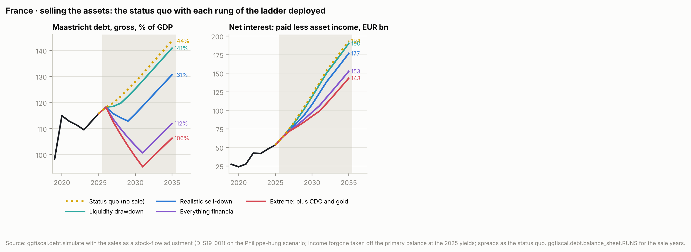
| Run | Sold, €bn | When | Debt 2030, % | Debt 2035, % | Net debt 2035, % | Interest saved 2035, €bn | Income lost 2035, €bn | Net interest 2035, €bn | Deficit 2035, % |
|---|---|---|---|---|---|---|---|---|---|
| Status quo (no sale) | -0 | – | 128 | 144 | 138 | 0 | 0 | 194 | 6.6 |
| Liquidity drawdown | 12 | 2027–2028 | 128 | 143 | 138 | 1 | 0 | 193 | 6.6 |
| Realistic sell-down | 35 | 2027–2029 | 127 | 143 | 137 | 2 | 1 | 193 | 6.6 |
| Distress: everything the État can reach | 417 | 2027–2031 | 117 | 130 | 126 | 24 | 8 | 178 | 6.2 |
Three readings. First, the carry is positive: the assets yield 1.28% in dividends and 1.72% in interest, the marginal OAT costs about four, so every €100bn sold improves the deficit by about €2.5bn a year once the interest saved is netted against the income lost. That is the whole case for selling, and it is a case about the deficit, not the stock. Second, the stock effect is one-off and the slope is not: even the distress run, which sells €417bn of assets including half the motorway concessions and everything the État owns outright, has the ratio rising again from 2032 because the primary deficit it was built on is untouched. By 2035 the ratio is 143.3% after the liquidity drawdown, 142.6% after the realistic sell-down and 130.2% after the distress run, against 143.7% without a sale and 115.7% today; every run climbs at the status quo's slope from the year its sales stop. Third, what the runs buy is time and liquidity, which in 2027–2029 is exactly what is scarce: the realistic ladder (€35bn) is a couple of months of OAT redemptions at the 2028–2029 pace (€246bn and €281bn a year, the wall sections 1 and 3 describe), the distress ladder (€417bn) more than a year of them, and both could be raised without a market. The generous accounting is therefore true and beside the point for solvency, and true and very much to the point for a refinancing scare, which is the risk sections 3 and 4 describe.
To ask the AFT on the asset side
- What floor does the Treasury account work to, and what did the 2025 run-down of €15bn of trésorerie active finance?
- Does the financing programme assume any stock-flow adjustment in 2027–2029 (privatisation receipts, the CAS Participations financières, cash), and in which direction?
- How does the AFT read INSEE's net debt against the gross figure when it talks to investors, and does anyone ask?
8The retirement age: what a year of it costs, line by line, and when
Section 5 folds pensions into one number a year: the Le Pen paths are "the counter-budget with slippage", €25bn or €15bn a year of consolidation, and the age is inside that number somewhere. This section takes it out and prices it on its own. The question is the one the committee put: if a 2027 government moves the legal age, how much does each category of expenditure and revenue move, in which year, and how far do the methods disagree? The answer, in one line: one cohort-year of retirement age, a whole birth cohort retiring a year earlier, costs the general government between €5.3bn and €13.4bn a year depending on the method (€13.4bn in Redbox's own cohort arithmetic), and a cut is front-loaded: "62 for all" from 2028 is worth €10.9bn in its first year, €16.0bn in 2030 and €25.9bn in 2035; add 60 for those who started before 20 and it is €30.3bn in 2030 and €42.9bn in 2035. That is the same order as the €25bn a year the Le Pen-majority path assumes in consolidation, and the RN's own €9bn is below every independent figure, including the Cour des comptes' cost of a single year of age.
The unit, and why it is plan-invariant
Everything here is the product of two things. Exposure is demographic and legal: the number of person-years in a given calendar year spent in retirement under the policy that would have been spent before the age under the law as it stands. It is computed month by month from Eurostat's population by single year of age Redbox and the age each birth cohort faces today (COR, Table 1.4 ext), and it is the only thing a plan changes. The unit is the cost per cohort-person-year on each Redbox line, and it is where the methods differ: it does not depend on who proposes the measure, only on who retires (their pension, their wage if they were working, the benefits they leave) and on the second-round effects a model attaches. So the loading is linear, as the committee asked: each cohort-year of lower age moves line X by y billion, and "62 for all", "60 for early starters" or "64 resumed" are different exposure schedules on the same units. Three limits, all in the assumptions table: the unit is not symmetric (a lower floor binds fewer people than a higher one: the Cour prices 63 at €5.8bn and 65 at €8.4bn against 64), it is not the same for every group (early starters retire on fuller careers), and the second-round channels are not linear in the stock of retirees at the macro level (unemployment absorbs part of a small shock and none of a large one).
The starting point is the law of 30 December 2025, not 64. The LFSS 2026 froze the age at 62 years 9 months for the 1964 and first-quarter-1965 cohorts and pushed 64 back to the 1969 cohort ext; it costs €1.8bn a year to 2032 on DREES's figures ext. "62 for all" therefore unwinds about a year for the cohorts retiring in 2028 and forgoes a year and a quarter for the later ones; "64 resumed" is the mirror image of the suspension, a saving of €3.0–3.5bn a year to 2032 and nothing after 2033 when the 1969 cohort reaches 64 either way.
Timing: a cut bites at once, a rise saves slowly
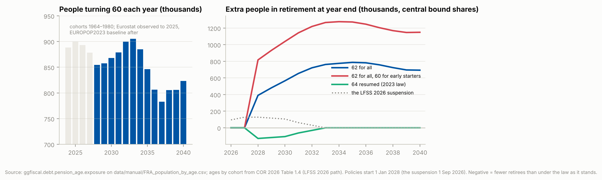
The question the committee asked about kicking the can has a clear answer, and it is asymmetric. A cut cannot be kicked: on the day the age falls to 62, everyone bound by the floor who is already past 62 retires, so 49% of the steady-state exposure is there in the first calendar year and 69% by 2030; the plateau arrives in 2033 only because the law's own path keeps climbing to 64 until then, which widens the gap year by year. A rise is the opposite: it is phased a quarter a cohort, its saving builds over years, and (the Cour's point) it is "powerful in the short run, stabilising in the medium run" ext. What can be kicked is the revenue side. The pension cheque and the lost contributions of the people who retire are immediate; the wider revenue loss that comes from a smaller labour force (income tax, VAT, corporate tax through GDP) builds over ten to fifteen years in the Trésor's model and barely at all in the OFCE's, so the two methods that carry it keep worsening after the exposure has levelled off (Figure 26). On the scenarios' 2028–2031 window the spending is all there and the second round is a third to a half of its long-run value.
| Year | 62 for all: cohort-years | of steady state | extra retirees, k | cost, €bn | with 60: cohort-years | of steady state | extra retirees, k | cost, €bn | 64 resumed: retirees, k | saving, €bn |
|---|---|---|---|---|---|---|---|---|---|---|
| 2028 | 0.85 | 49% | 390 | 10.9 | 1.46 | 59% | 816 | 23.5 | -128 | 3.5 |
| 2029 | 1.06 | 61% | 481 | 13.9 | 1.69 | 69% | 932 | 27.2 | -117 | 2.8 |
| 2030 | 1.19 | 69% | 566 | 16.0 | 1.87 | 76% | 1,039 | 30.3 | -106 | 3.0 |
| 2031 | 1.33 | 78% | 654 | 18.3 | 2.05 | 83% | 1,143 | 33.8 | -62 | 2.2 |
| 2032 | 1.50 | 87% | 722 | 20.9 | 2.22 | 90% | 1,219 | 36.9 | -31 | 2.6 |
| 2033 | 1.70 | 99% | 762 | 24.2 | 2.43 | 99% | 1,266 | 40.8 | 0 | 0.0 |
| 2034 | 1.72 | 100% | 775 | 25.0 | 2.46 | 100% | 1,277 | 42.0 | 0 | 0.0 |
| 2035 | 1.75 | 102% | 787 | 25.9 | 2.47 | 101% | 1,273 | 42.9 | 0 | 0.0 |
| 2036 | 1.76 | 102% | 782 | 26.5 | 2.45 | 100% | 1,246 | 43.2 | 0 | 0.0 |
Exposure in cohort-years (one = 850k people retiring one year earlier), the share of the 2034 level, the extra people in retirement at year end (central bound shares) and the bottom-up cost on the primary balance. Redbox: pension_age_exposure.csv, pension_age_matrix.csv.
Five ways to price a cohort-year, and where they land
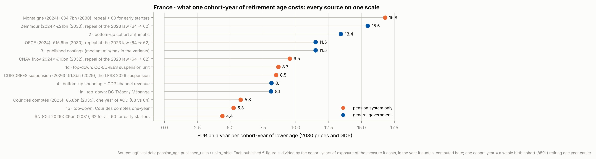
Method 1, top-down elasticities. Three published anchors, each read per cohort-year. (1a) The DG Trésor's note to the COR of January 2022 ext decomposes a two-year rise in the long run: pensions −0.4% of GDP, pension contributions +0.1, other social benefits −0.2 (invalidity, sickness, unemployment and minima paid for two more years), other taxes and contributions +0.6, a total of 0.9% of GDP, half of it outside the pension system; Mésange's time path reaches 0.1% of GDP at five years, 0.4 at ten and 0.9 at twenty, and the OFCE's e-mod.fr gives only 0.15 at ten. Halved for one cohort-year and with the second-round revenue on the Mésange ramp, this gives €8.1bn a cohort-year in 2030 and rising. (1b) The Cour des comptes' February 2025 report ext prices one year of age, 63 against 64, at €5.8bn of extra pension spending in 2035 on the pension system alone: €5.3bn at 2030 prices, the floor of the range because it carries no revenue outside the system and because of the asymmetry it notes. (1c) The DREES costing of the suspension, €1.8bn a year ext, divided by the suspension's own exposure as computed here (0.21 cohort-years on average over 2027–2031) gives €8.7bn a cohort-year on the pension system; it sits above the Cour because the suspension also delayed the 172-quarter durée by a cohort, which this exposure does not count.
Method 2, bottom-up cohort arithmetic. Redbox's own build, every number declared in the table at the end of the section. A cohort is split three ways: those on carrière longue already (17% of departures, CNAV 2024 ext), other early starters who began before 20 (the share is the one number nobody publishes; 35% is declared, 25–45% the range) and everyone else. Of the last group 45% are bound by the floor and move when it moves (INSEE: at 62 when 62 was the age, 51% were retired and a fifth of those had left before on long careers); of the early starters 80%. Each bound person-year costs a gross pension of €1,600 a month (DREES, new retirees ext), and takes away, for the 65% who were in work, a €36,700 wage's actual contributions (R06, 50% of gross) and income taxes (R03, 15.5%), partly given back as CSG on the pension; for the 7% who were unemployed it ends an ARE; and for everyone the DREES's spillover, €2,250 per cohort-person-year of invalidity, sickness and minima no longer paid (GF10_X). Per cohort-year in 2030: GF10_2 +€9.5bn, R06 −€6.0bn, R03 −€0.9bn, GF10_X −€2.4bn and GF10_5 −€0.6bn of savings, €13.4bn net; the pension-system part alone (pension less pension contributions) is €5.6bn, between the Cour and the DREES unit, which is the check that the arithmetic is on the right scale.
Method 3, the published costings. Converted as in Figure 24 and re-applied to the same exposures, their median is €11.5bn a cohort-year (the minimum and maximum are the low and high variants). They are not all on the same scope: the OFCE and Zemmour figures are general government, the CNAV's and Montaigne's pension-system only, and the RN's is a cruising-speed figure with no scope stated; converting them to the unit is what makes them comparable, and it shows the RN's figure to be a third to a half of everyone else's.
Method 4, the growth channel. The same spending as method 2, but the revenue side taken through GDP rather than through the retirees' own wages: a cohort-year of lower age removes labour supply and, after ten years, 0.49% of GDP in the central case for "62 for all" by 2035 (Mésange's 260,000 jobs for two cohort-years; the OFCE's 110,000 gives 0.21%, Rexecode's +1.1% of GDP for the 2023 reform gives 0.77%), and the revenue lines follow at unit elasticity: €8.3bn in 2035 (€3.6–13.0bn). The engine would carry this as a growth haircut of up to 9 basis points a year on "62 for all" and 12 with 60 (Figure 27), on top of the 0% the Le Pen-majority path already declares. Methods 2 and 4 are two views of the same revenue, not two revenues: method 2 is the direct loss if nobody replaces the retiree, method 4 the macro loss after the labour market has adjusted, and the OFCE's point is that in the short run an unemployed person often fills the job, which is why its number is the lowest.
Method 5, the strict file. The central matrix expressed in the deliverables' own terms: the GF10_2 forward path in expenditure_cofog.csv is an EC Ageing Report path with the 2023 law in force and no suspension, 13.4% of GDP in 2030; with "62 for all" it is 13.7%, with 60 for early starters 14.0% (Figure 28). This is the form the matrix will take when it is loaded on the scenarios: a per-line, per-year addition to the declared paths, in euros or in points of GDP.
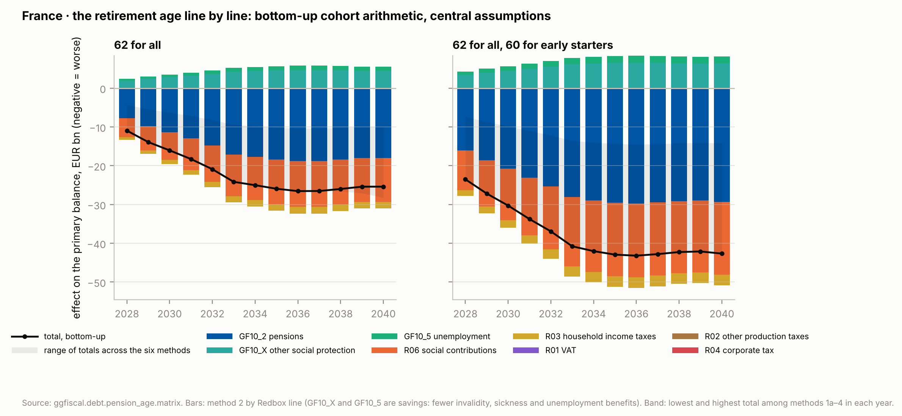
The matrix, line by line
Effect on each line, EUR bn, bottom-up central with the range across the six methods in brackets; expenditure positive = more spending, revenue positive = more revenue. The last two rows give the primary-balance total and, for the bottom-up method, the low-to-high span of its own assumptions (bound shares, early-starter share, wage, status, start date).
"62 for all" from 1 January 2028
| Line | Side | 2028 | 2030 | 2032 | 2035 |
|---|---|---|---|---|---|
| GF10_2 · Old age (pensions) | expenditure | +7.7 (+3.0 to +7.7) | +11.4 (+4.5 to +11.4) | +14.8 (+5.8 to +14.8) | +18.4 (+7.2 to +18.4) |
| GF10_X · Social protection ex old age and unemployment | expenditure | -1.9 (-2.2 to +0.0) | -2.8 (-3.2 to +0.0) | -3.7 (-4.3 to +0.0) | -4.6 (-5.4 to +0.0) |
| GF10_5 · Unemployment | expenditure | -0.5 (-0.5 to +0.0) | -0.7 (-0.8 to +0.0) | -0.9 (-1.1 to +0.0) | -1.1 (-1.3 to +0.0) |
| R06 · Net social contributions | revenue | -4.9 (-4.9 to -0.2) | -7.2 (-7.2 to -0.7) | -9.3 (-9.3 to -1.5) | -11.6 (-11.6 to -2.9) |
| R03 · Taxes on household income | revenue | -0.7 (-0.7 to +0.0) | -1.0 (-1.0 to +0.0) | -1.3 (-2.0 to +0.0) | -1.7 (-3.5 to +0.0) |
| R01 · Value added tax | revenue | +0.0 (-0.3 to +0.0) | +0.0 (-0.8 to +0.0) | +0.0 (-1.5 to +0.0) | +0.0 (-2.7 to +0.0) |
| R02 · Other taxes on production and imports | revenue | +0.0 (-0.3 to +0.0) | +0.0 (-0.9 to +0.0) | +0.0 (-1.8 to +0.0) | +0.0 (-3.2 to +0.0) |
| R04 · Taxes on corporate income | revenue | +0.0 (-0.1 to +0.0) | +0.0 (-0.3 to +0.0) | +0.0 (-0.6 to +0.0) | +0.0 (-1.1 to +0.0) |
| Primary balance, all lines | net | -10.9 (-10.9 to -4.3) | -16.0 (-16.0 to -6.3) | -20.9 (-20.9 to -8.2) | -25.9 (-25.9 to -10.1) |
| Primary balance, bottom-up, low to high assumptions | net | -1.9 to -19.0 | -8.1 to -27.8 | -10.5 to -36.2 | -13.0 to -44.9 |
"62 for all, 60 with 40 annuités for a start before 20"
| Line | Side | 2028 | 2030 | 2032 | 2035 |
|---|---|---|---|---|---|
| GF10_2 · Old age (pensions) | expenditure | +16.0 (+5.3 to +16.0) | +20.7 (+7.0 to +20.7) | +25.3 (+8.7 to +25.3) | +29.5 (+10.2 to +29.5) |
| GF10_X · Social protection ex old age and unemployment | expenditure | -3.3 (-3.8 to +0.0) | -4.4 (-5.0 to +0.0) | -5.5 (-6.3 to +0.0) | -6.5 (-7.6 to +0.0) |
| GF10_5 · Unemployment | expenditure | -1.0 (-1.0 to +0.0) | -1.2 (-1.3 to +0.0) | -1.5 (-1.6 to +0.0) | -1.8 (-1.9 to +0.0) |
| R06 · Net social contributions | revenue | -10.3 (-10.3 to -0.3) | -13.3 (-13.3 to -1.1) | -16.2 (-16.2 to -2.3) | -18.9 (-18.9 to -4.1) |
| R03 · Taxes on household income | revenue | -1.5 (-1.5 to +0.0) | -1.9 (-1.9 to +0.0) | -2.4 (-3.0 to +0.0) | -2.8 (-5.0 to +0.0) |
| R01 · Value added tax | revenue | +0.0 (-0.4 to +0.0) | +0.0 (-1.2 to +0.0) | +0.0 (-2.2 to +0.0) | +0.0 (-3.8 to +0.0) |
| R02 · Other taxes on production and imports | revenue | +0.0 (-0.5 to +0.0) | +0.0 (-1.4 to +0.0) | +0.0 (-2.7 to +0.0) | +0.0 (-4.5 to +0.0) |
| R04 · Taxes on corporate income | revenue | +0.0 (-0.2 to +0.0) | +0.0 (-0.5 to +0.0) | +0.0 (-0.9 to +0.0) | +0.0 (-1.5 to +0.0) |
| Primary balance, all lines | net | -23.5 (-23.5 to -7.4) | -30.3 (-30.3 to -9.8) | -36.9 (-36.9 to -12.1) | -42.9 (-42.9 to -14.4) |
| Primary balance, bottom-up, low to high assumptions | net | -3.5 to -43.9 | -13.7 to -55.4 | -17.0 to -66.9 | -19.9 to -77.5 |
Redbox: pension_age_matrix.csv (policies p62 and p60, variant central; the bracket is the minimum and maximum of methods 1a, 1b, 1c, 2, 3 and 4 on the same line and year). R01, R02 and R04 move only in methods 1a and 4, so their bottom-up value is zero and the bracket is the range.
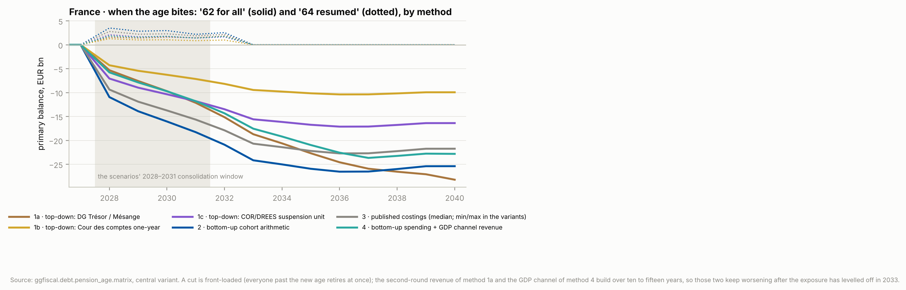
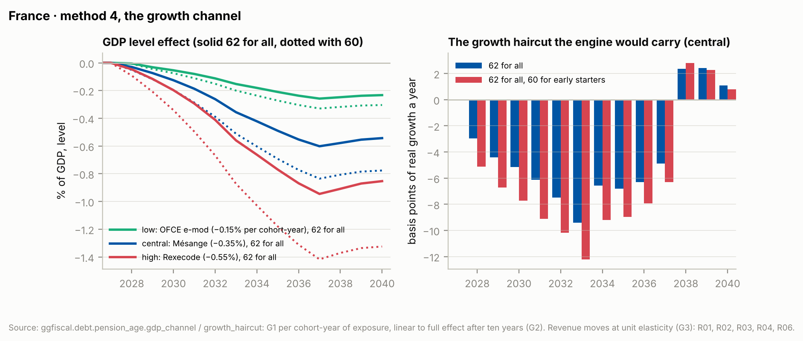
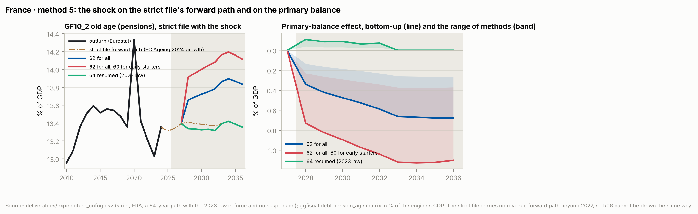
Units per cohort-year, every method, every line
| Method | GF10_2 | GF10_X | GF10_5 | R06 | R03 | R01 | R02 | R04 | Net cost |
|---|---|---|---|---|---|---|---|---|---|
| 1c · top-down: COR/DREES suspension unit | +6.2 | +0.0 | +0.0 | -2.5 | +0.0 | +0.0 | +0.0 | +0.0 | 8.7 |
| 1b · top-down: Cour des comptes one-year | +3.7 | +0.0 | +0.0 | -1.5 | +0.0 | +0.0 | +0.0 | +0.0 | 5.3 |
| 1a · top-down: DG Trésor / Mésange | +6.8 | -2.7 | -0.7 | -2.2 | -0.9 | -0.6 | -0.8 | -0.3 | 8.1 |
| 2 · bottom-up cohort arithmetic | +9.5 | -2.4 | -0.6 | -6.0 | -0.9 | +0.0 | +0.0 | +0.0 | 13.4 |
| 3 · published costings (median; min/max in the variants) | +8.1 | -2.0 | -0.5 | -5.1 | -0.7 | +0.0 | +0.0 | +0.0 | 11.5 |
| 4 · bottom-up spending + GDP channel revenue | +9.5 | -2.4 | -0.6 | -0.6 | -0.3 | -0.3 | -0.3 | -0.1 | 8.1 |
EUR bn a year per cohort-year of lower age, 2030 prices and GDP; expenditure positive = more spending, revenue negative = less revenue; the net cost is the worsening of the primary balance. Methods 1b and 1c are pension-system figures split between pensions and pension contributions in the bottom-up proportion. Redbox: pension_age_units.csv.
| Published costing | Figure | What it costs | Scope | Cohort-years in that year | €bn per cohort-year |
|---|---|---|---|---|---|
| RN (Oct 2026) | €9bn in 2031 | 62 for all, 60 for early starters | pension | 2.05 | 4.4 |
| OFCE (2024) | €15.6bn in 2030 | repeal of the 2023 law (64 → 62) | gg | 1.36 | 11.5 |
| CNAV (Nov 2024) | €16bn in 2032 | repeal of the 2023 law (64 → 62) | pension | 1.68 | 9.5 |
| Zemmour (2024) | €21bn in 2030 | repeal of the 2023 law (64 → 62) | gg | 1.36 | 15.5 |
| Montaigne (2024) | €34.7bn in 2030 | repeal + 60 for early starters | pension | 2.06 | 16.8 |
| Cour des comptes (2025) | €5.8bn in 2035 | one year of AOD (63 vs 64) | pension | 1.00 | 5.8 |
| COR/DREES suspension (2026) | €1.8bn in 2029 | the LFSS 2026 suspension | pension | 0.21 | 8.5 |
The conversion behind Figure 24: the measure's exposure in the quoted year, computed here on the same population and ages, and the € figure divided by it. Scope: "gg" general government, "pension" the pension system only. Sources in section 10.
The assumptions, in full
| Id | Assumption | Value (low to high) | Status | Source and note |
|---|---|---|---|---|
| D1 | Population by single year of age | Eurostat persons | sourced | Eurostat demo_pjan (1 Jan 2024, 2025) and proj_23np baseline (2027–2045), retrieved 22 Oct 2026; data/manual/FRA_population_by_age.csv 2026 is the 2025 population aged one year (no 2026 vintage yet). Cohort size = people at age 60 in the year the cohort turns 60; mortality between 60 and 64 ignored (≈1% a year). |
| L1 | Age of entitlement (AOD) by cohort, law as it stands | COR Table 1.4 years | sourced | COR, Rapport annuel June 2026, Tableau 1.4 (LFSS 2026 suspension): 1960–61 62; Sep–Dec 1961 62.25; 1962 62.5; 1963–64 62.75; Jan–Mar 1965 62.75; Apr–Dec 1965 63; 1966 63.25; 1967 63.5; 1968 63.75; 1969+ 64 |
| L2 | Age of entitlement by cohort, 2023 law before suspension | COR Table 1.4 years | sourced | same table, 'après réforme' column: 1964 63; 1965 63.25; 1966 63.5; 1967 63.75; 1968+ 64 Used only to cost the suspension (calibration M5) and to read published repeal costings (M6). |
| L3 | Early-career (carrière longue, started before 20) age = AOD − 2, floor 60 | 2 years | inferred | Law of 14 April 2023: departure two years before the AOD for a start before 20 (four before 18, six before 16) The before-16 and before-18 tiers (58, 60) are folded into the before-20 tier; the durée condition (all quarters) is not modelled. |
| L4 | Required insurance duration (durée) 172 quarters from the 1966 cohort | 172 quarters | sourced | COR Table 1.4 Not modelled as a separate lever. The RN's 42 annuités (168) would also lower the age for people bound by the durée rather than the floor: omitted, direction = more cost (see U10). |
| P0 | Policy start date | 2028-01-01 date 2028-09-01 to 2028-01-01 | declared | committee: scenario policy starts in 2028 (D-S18-001 rule 3); a LFSS would take effect 1 September Applies to pensions liquidated from that date; no retroactivity for people already past the new age (they retire at once). |
| P1 | '62 for all': AOD 62 for every cohort whose AOD under the law exceeds 62 | 62 years | sourced | Le Pen, 14–17 Oct 2026 (franceinfo, Europe 1/CNEWS) |
| P2 | '60 for early starters': 60 with 40 annuités for a start before 20; 62 for the others | 60 years | sourced | Le Pen, 17 Oct 2026; Chenu, RTL 18 Oct 2026; full plan promised 17 Nov 2026 The 40-annuité test is assumed met at 60 by everyone who started before 20 (they have 40+ years by 60 by construction, bar career gaps: see B2). |
| P3 | '64 resumed': the 2023 path without the suspension | 64 years | sourced | Attal/Retailleau positions, Capital 24 Sep 2026 Shown as the negative exposure (a saving) for symmetry; the Cour's asymmetry (M4) applies. |
| B1 | Share of a cohort bound by the age floor (others) | 0.45 share 0.35 to 0.55 | inferred | INSEE/FIPECO: at 62 in 2021 (AOD 62) 51% retired, 33% employed, 14% inactive, 3% unemployed; ≈11% had left before 62 (carrière longue) People who liquidate at the AOD itself ≈ 40% of a cohort; the 42-annuité durée adds some. These are the people who move when the floor moves. |
| B2 | Share bound among early starters | 0.8 share 0.65 to 0.9 | inferred | long careers have the durée by 60; DREES: 15% of men and 7% of women liquidate in the year of their 60th birthday |
| B3 | Share of a cohort that started work before 20 | 0.35 share 0.25 to 0.45 | missing | no DREES/CNAV series found for the 1965–75 cohorts; Terra Nova (13 Oct 2026) 'concerne encore tellement de monde sur les dernières cohortes des années 1960'; Montaigne 2024 low case (early starters only) €31.5bn of €34.7bn The single most consequential missing number. Needs the DREES EIC age at first validated quarter by cohort. |
| B4 | Of which already eligible to carrière longue under current rules | 0.17 share of cohort | sourced | CNAV rapport statistique 2024: 114k RACL departures of 658k new retirees (17%); 1 man in 4, 1 woman in 10 These leave at AOD − 2 already; '62 for all' does not move them, '60' moves them by AOD − 2 − 60 (0.75 → 2 years as the AOD rises). |
| B5 | Status of the bound before they retire: employed / unemployed / inactive-sick-invalid | 0.65 / 0.07 / 0.28 shares 0.55 / 0.1 / 0.35 to 0.75 / 0.05 / 0.2 | inferred | FIPECO on INSEE 2021: among the non-retired at 62, 66% employed, 6% unemployed, 28% inactive The bound are likelier to be in work than the average non-retired (those who wait for the full rate are employed); the high case reflects that. |
| U1 | Gross pension at liquidation | 1600 EUR a month 1500 to 1700 | sourced | DREES, Les retraités et les retraites 2025: new retirees 2023, residents, €1,557 gross droit direct; +2.4% to 2024 All compulsory schemes incl. Agirc-Arrco (in S.13). Survivors' pensions excluded. |
| U2 | Early starters' pension relative to the average | 0.95 ratio 0.85 to 1.05 | missing | none Long careers at lower wages: full rate but lower SAM. Direction unknown within ±10%. |
| U3 | Gross wage of the bound who are employed | 36700 EUR a year 33000 to 40000 | inferred | INSEE 2024: €3,602 gross a month per full-time equivalent, private sector; × 0.85 for part-time at 60–63 (declared) |
| U4 | Actual social contributions (D.611 + D.613) as a share of gross wage | 0.5 share 0.45 to 0.55 | inferred | employer ≈ 39% after the réduction générale at 1.5 SMIC, employee 11.3% (CSG/CRDS excluded: a tax) |
| U5 | Taxes on income (CSG/CRDS + IR) on wages / pensions / unemployment benefit | 0.155 / 0.11 / 0.08 shares | inferred | CSG/CRDS 9.7% on 98.25% of the wage + IR ≈ 6%; pensions CSG at the average effective 7% (reduced rates) + CRDS/CASA 0.8% + IR ≈ 3%; ARE 6.2% + IR |
| U6 | Unemployment benefit (ARE) of the bound who are unemployed | 16000 EUR a year | inferred | Unédic average ARE ≈ €1,300–1,350 gross a month |
| U7 | Other benefits (invalidity, sickness, AT-MP, minima) per cohort-person-year | 2250 EUR, 2019 prices | sourced | DREES for the COR, 27 Jan 2022: a two-year rise in the AOD = +€3.6bn (0.14% GDP) in 2019 on ≈1.6M cohort-person-years; invalidity 1.8bn, minima 0.83bn Applied to the whole cohort's exposure (it embeds the share concerned). Unemployment insurance and prime d'activité are not in it (GF10_5 is costed separately). |
| U8 | Indexation of unit costs | 0.02 a year | declared | engine deflator (D-S18-001 rule 4) Pensions index on prices, wages on prices + productivity: a wage-pension gap of ~0.7% a year is ignored to 2040. |
| U9 | Lower pension for life from an earlier liquidation | 0 EUR | declared | COR 2025: the 2023 reform −0.2 pt GDP in 2030 but +0.2 pt in 2070 Omitted to 2040; direction = less cost over time, reversing after ~2050. |
| U10 | Durée 43 → 42 annuités | 0 EUR | missing | RN programme Omitted. Would lower the effective age for people bound by the durée (not the floor). Direction = more cost; high case adds 10% to GF10_2. |
| M1 | DG Trésor long-run effect of a two-year AOD rise, % GDP | GF10_2: -0.4; R06: 0.1; other_benefits: 0.2; other_revenue: 0.6 % GDP | sourced | DG Trésor note to the COR, 27 Jan 2022, as tabulated by FIPECO (19 Oct 2022): pensions −0.4, pension contributions +0.1, other benefits +0.2, other compulsory levies +0.6, total +0.9 (≈€22bn 2022) Read per cohort-year as half of each (2 cohort-years at steady state). Signs as a saving; the engine flips them for a cut. |
| M2 | Time path of the public-balance effect (Mésange) and the OFCE alternative | 5: 0.1; 10: 0.4; 15: 0.7; 20: 0.9; ofce_10: 0.15 % GDP | sourced | same notes: Mésange 5/10/15/20 years; OFCE e-mod.fr 0.15 at 10 years, +110k jobs |
| M3 | Ramp of the second-round revenue channel (other_revenue) after exposure begins | 1: 0.15; 5: 0.45; 10: 0.75; 15: 1 share of long run 1: 0.05; 5: 0.2; 10: 0.4; 15: 0.5 to 1: 0.3; 5: 0.7; 10: 1; 15: 1 | inferred | M2 with the eight-year phase-in of the simulated reform stripped out (inferred); low ≈ OFCE Spending channels follow exposure at once (people retire on the day); pension contributions too; only the GDP-type revenue lags. |
| M4 | Cour des comptes: one year of AOD (63 vs 64) on the pension-system balance | 5.8 EUR bn, 2035 5.8 to 8.4 | sourced | Cour des comptes, 20 Feb 2025: 63 → +€5.8bn of spending in 2035; 65 → up to −€8.4bn Asymmetric: a lower floor binds fewer people than a higher one. Deflated to each year at 2%. |
| M5 | DREES/COR cost of the 2026 suspension | 1.8 EUR bn a year, 2026–2032 | sourced | COR June 2026, p.105 and Tableau 2.5 (DREES Trajectoire); government lettre rectificative €0.1bn 2026 / €1.4bn 2027 Used as a calibration: € per cohort-year = 1.8 / the suspension's own exposure computed here. |
| M6 | Published costings | RN (Oct 2026): 9 / 2031 / p60 / pension; OFCE (2024): 15.6 / 2030 / repeal / gg; CNAV (Nov 2024): 16 / 2032 / repeal / pension; Zemmour (2024): 21 / 2030 / repeal / gg; Montaigne (2024): 34.7 / 2030 / repeal60 / pension EUR bn a year | sourced | RN €9bn cruising, €1.9bn 2027 → €9.5bn 2031 (Terra Nova reading of the counter-budget); OFCE 'minimal cost of repeal' €9.5bn 2027, €15.6bn 2030; CNAV via AN amendments €16bn 2032; M. Zemmour €20–22bn 2030; Institut Montaigne €34.7bn 'à l'horizon 2027' for repeal + 60 with 40 annuités for pre-20 starters Each is converted to € per cohort-year on the exposure of the measure it costs (repeal = 2023 path → 62), then re-applied to P1/P2. Montaigne's 2027 is read as a steady-state figure and placed at 2030. |
| G1 | GDP level effect per cohort-year of lower age, after 10 years | -0.35 % of GDP -0.15 to -0.55 | inferred | Mésange: +260k jobs for two cohort-years at 10 years → 130k per cohort-year ≈ 0.43% of employment × 0.8 relative productivity; OFCE +110k (−0.15%); Rexecode +1.1% GDP for the 2023 reform in 2030 (−0.55%) |
| G2 | Ramp of the GDP effect | 10 years to full effect, linear | declared | declared, from the M2 path |
| G3 | Elasticity of R01, R02, R03, R04, R06 to GDP | 1 ratio | declared | declared Expenditure fixed in euros, so the ratios also move. Revenue shares of GDP from the 2024 strict file. |
| G4 | GDP path for the ratios | simulate.gdp_path(philippe_hung) EUR bn | declared | engine reference scenario (0.5% real, 2% deflator) |
| X1 | Scope | general government, S.13, all compulsory schemes | declared | committee, 20 Oct 2026 COFOG GF10_2 carries CNAV, the régimes spéciaux, the fonction publique and Agirc-Arrco; Agirc-Arrco follows the legal age with a lag (its own board) — assumed to follow. |
| X2 | Horizon | 2026–2040 years | declared |
Status: sourced = a published number used as published; inferred = derived from a published number by a stated step; declared = a convention; missing = no source found, a number chosen to be argued with. Redbox: ggfiscal.debt.pension_age.ASSUMPTIONS, pension_age_assumptions.csv.
To ask the AFT on the retirement age
- Does the financing programme's macro frame carry a pension-age assumption for 2028–2030, and whose costing does it use for a return to 62?
- How does the AFT read Agirc-Arrco's reserves and the CNAV's borrowing against a €15–30bn a year swing in the pension branch: more ACOSS paper, or more OATs?
- Has the DREES's cohort-level work on the age of entry into work (the B3 share above) been shared with the Trésor for the RN costing?
9Questions to put to Nicolas Maserak
The counterpart is the AFT's Chief Economist and Head of Research, not its chief executive or its head of trading. That changes the questions in three ways. He owns the macro and rates assumptions behind the financing programme, the debt-service projection that feeds the PLF, the investor research and the monthly bulletin; he does not decide the programme, the tenor mix or the buybacks, and he will not comment on politics, the ECB or the rating agencies. So every question below is phrased as "how do you model", "what does your research show", "what is your reading", which he can answer in full. Second, a head of research will engage with the register: lead with the fact that Redbox reconciles security-by-security interest to S.1311 D.41 within ±€6bn and that the fixed lines sit 1–4% above the AFT's totals because buybacks are published only in aggregate, and the data asks follow naturally as an exchange rather than a request. Third, his career before the AFT ran through the Trésor's state-shareholding agency (the APE, managing the State's stakes in EDF, RTE and Enedis) ext: a corporate-finance lens. Frame the interest bill as a refinancing wall and the spread as a cost of capital and he will meet the argument on that ground. Check the spelling and title on aft.gouv.fr before the meeting; the profile could not be verified online.
In the order to raise them
- Projection method. What 10-year OAT, spread and BTF rate sit behind the 2027 and 2028 charge de la dette in the PLF 2027, and is the spread held at the forward or given a path? Our register roll gives €90bn and €105bn of general-government interest in the status quo. Do you project line by line, as we do, or on the average cost of the stock?
- Cross-check offer. Our security-level interest meets D.41 within ±€6bn since 2012. Where would you expect the residual to sit: the accrual on linkers, the buybacks, or the value-date items? This is the moment to ask for rachats by line and the programme-117 tables in a machine-readable form.
- The refinancing wall. The register shows €203bn of OATs maturing in 2027, €246bn in 2028 and €281bn in 2029, the highest share of GDP on record. How much of that has already been bought back, and how much of 2027 do you expect to pre-fund in Q4 2026?
- Demand research. What does your investor research show about the marginal buyer since the Eurosystem run-off reached about €10bn a month? Which holder group absorbed the September widening? Then: the country split of non-residents that the AFT does not publish, and whether the Japanese and Asian official bid returned once OATs cheapened past BTPs.
- Maturity at issue. The average maturity of fixed-rate issuance fell from 12.6 years (2021) to 10.3 (2026 to date). Is that a demand fact or a cost choice in your research, and at what spread differential does the 20- to 30-year sector reopen?
- Bills as buffer. In 2008–2009 the BTF stock doubled to €214bn. Is that still the research view of the shock absorber, or is there an internal ceiling on the bill share of the stock?
- Spread feedback. The Cour des comptes has urged a spread-feedback assumption in debt-service projections. Has your team modelled one, and what elasticity of the spread to the debt ratio do you find? We declare spread paths outright (150–250 bp in 2027) rather than a mechanical feedback, because the pricing channel moves faster than the debt ratio.
- Cost-at-risk. What does your cost-at-risk model say a 100 bp parallel shift adds to the 2028 charge, and how much of that is the bill stock? Our register gives about €2bn a year with no lag from the bills alone.
- Ratings and index thresholds, as research. What have you seen in investor mandates at the single-A boundary, and did any index or collateral treatment change after the S&P and Fitch moves?
- TPI, as a fact question. Which of the TPI's four conditions does the Trésor consider France meets today? He will not comment on ECB intentions; he can answer a question about the fiscal framework.
- Linkers and green OATs. With 11% of the stock indexed and uplift accruing at about €6bn a year, is the linker programme being scaled to the demand you see, and does the green OAT still price through the curve?
- The election, without naming candidates. How does the AFT plan the Q2 2027 issuance calendar around the two rounds, and what did the June 2024 dissolution teach the desk about syndication timing?
10Method, sources and caveats
What is Redbox and what is external
Everything marked Redbox or unmarked in a figure source line is read from the flat files in deliverables/ of run 20260911T000629Z: the per-security register (D-S10-007), the reconciliation chains, the balance ledger and the strict matrix. Everything marked ext is from a web search on 18 September 2026 by a research agent; the AFT's own site was unreachable to it (HTTP 503 on every fetch), so AFT-attributed figures come from press and parliamentary reproductions of AFT releases and should be verified on aft.gouv.fr before being quoted to the AFT. The scenarios were revised on 11 October 2026 (D-S18-001, D-S18-002 for the statistical benchmark: five configurations, spread and fiscal paths declared by the committee, Bloomberg spread of 11 October, history from 2010 with Eurostat debt). The scenario engine and its charts date from D-S12-001: src/ggfiscal/debt/simulate.py, src/ggfiscal/report/briefing_fra.py, src/ggfiscal/report/briefing_fra_scenarios.py, the notebook notebooks/briefing_FRA_AFT.ipynb, and the outputs under reports/briefing_FRA_AFT_2026-09/. Section 7 (D-S19-001, 12 October 2026) adds src/ggfiscal/debt/balance_sheet.py and src/ggfiscal/report/briefing_fra_balance.py, reading the Eurostat balance-sheet tables retrieved into data/manual/FRA_balance_sheet_eurostat.csv; its external facts were fetched on 12 October 2026 and are listed below.
The engine's declared assumptions
| Item | Value | Source or reason |
|---|---|---|
| Register | Positions at 10 Sep 2026, 106 bonds and 30 bill lines outstanding | debt_positions (office snapshot) |
| Nominal GDP | 2025 €2,979bn; 2026 €3,056bn; 2027 €3,151bn; then the scenario's real growth plus a 2% deflator | ledger; strict_FRA (EC AMECO); declared |
| Primary balance | −3.1 (2025), −2.7 (2026), −2.5 (2027) % of GDP in every scenario; from 2028 the previous year in €bn plus the scenario's change, or for the statistical benchmark the benchmark's change in pp of GDP (section 5 tables) | declared; committee 11 Oct 2026 |
| Bund curve | 3m 2.50, 2y 3.00, 5y 3.25, 10y 3.50, 30y 3.85 %, flat through 2035 | 10y declared by the committee (DE_LT10 Sep 2026 avg 3.47); 3m EA_MM_3M Aug 2026; 2y–30y keep the previous slope to the 10y |
| Spread today | 135 bp on 11 Oct 2026, applied to the rest of 2026 in every scenario | Bloomberg (ext); the bundle's OECD monthly series ends at 101 bp in September 2026 |
| Spread term structure | 0.15 / 0.45 / 0.75 / 1.00 / 1.15 × the 10y spread at 3m / 2y / 5y / 10y / 30y | declared |
| Issuance rule | Constant maturity profile (bills 7.6% of the stock, bonds by bucket at their end-2026 shares), tranches at the AFT's own 2025 residual maturity at issue per bucket; the same in every scenario | debt_issuance_by_bucket; AFT 2026 programme |
| Inflation (uplift) | 2.0% a year, linkers 7% of new issuance at the real yield | declared |
| Deficit financed by negotiable debt | 0.90 | Δ(F.31+F.32) / −NLB, 2015–2025, from the bundle |
| Wedge to GF01_7 | 0.45% of GDP (€13.4bn in 2025) | GF01_7 less register accrued (D.41) interest, 2025 |
| Maastricht debt, end-2025 | 115.6% of GDP; accumulates the deficit plus a declared stock-flow adjustment, zero in every committee scenario | INSEE 27 Mar 2026 (ext); declared (D-S19-001) |
| Asset side (section 7) | Liquid assets €216bn held flat in euros; equity €774bn growing with nominal GDP; yields 1.72% and 1.28% from 2025 income; sales as negative SFA, the income each sold line paid the État off the primary balance from the half-year of sale; spreads unchanged | Eurostat gov_10a_ggfa and gov_10a_main (updated 2026-07-21), data/manual; declared |
| Sell-down ladder | Three runs on the status quo: liquidity €12.0bn (2027–28), realistic €35bn (2027–29), distress €417bn (2027–31); amounts per line in the section 7 table by the committee's rules of 14 Oct 2026 (no → nothing; law → half in distress; yes → stated per class) | declared (ggfiscal.debt.ladder_detail.apply_rules, balance_sheet.RUNS) |
| Spread feedback | None: spread paths are declared in full | declared |
| Official baselines (Figures 14a, 14b) | EC Debt Sustainability Monitor 2025 baseline (debt, primary balance, interest; headline deficit = interest − primary balance), 2024–2036; IMF WEO October 2026 (GGXWDG, GGXCNL), 2020–2031 | DSM 2025 country fiches (EC, 12 Feb 2026) and IMF data API, retrieved 15 Oct 2026 (data/manual/FRA_benchmark_paths.csv) |
| Debt history | Maastricht debt, S13, % of GDP, 1995–2025 | Eurostat gov_10dd_edpt1, retrieved 11 Oct 2026 (data/manual) |
| 2026 | Bridge year: interest = strict file (€77.7bn, AMECO); only the remaining 31% of the year is financed | the register already holds the issuance to 10 Sep |
| Scenario | Narrative (the numbers are in the section 5 table) |
|---|---|
| Statistical benchmark | Redbox's statistics-based forecast of the primary balance (benchmark_balance.csv): its year-on-year changes 2028–2031, flat as a share of GDP after; spread and growth as Philippe, hung. |
| Philippe, majority | Pension age and spending review delivered in part: primary balance €10bn a year better to 2031; growth 1%; spread 150 → 125 bp. |
| Philippe, hung Assembly | The status quo: budgets by 49.3 with concessions, €2bn a year of consolidation; growth 0.5%; spread 175 → 150 bp. |
| Le Pen, majority | RN counter-budget enacted with slippage: €25bn a year against the €140bn by 2032 promised; growth 0% as the cuts bite; spread spikes to 190 bp, then 125 bp. |
| Le Pen, hung Assembly | RN president, no majority: part of the counter-budget passes, €15bn a year; growth 0.5%; spread 175 → 125 bp. |
| Mélenchon | LFI programme: spending ahead of revenue, primary balance €10bn a year worse to 2031; growth 0%; spread 250 → 300 bp. |
Caveats
- The register is gross of buybacks on the fixed lines (1–4% above the AFT); redemptions and gross issuance in the engine are correspondingly high. Net issuance and interest are barely affected.
- Interest is on the accrual basis and general government; the État's budgetary "charge de la dette" (about €58bn in 2026 ext) is a narrower, cash concept and will always be lower.
- Inflation and the Bund curve are common to all scenarios; growth differs but enters only through nominal GDP, because the primary balance is declared as an outturn in euros. The engine is an arithmetic of the register, not a macro model: the growth and spread assumptions are not derived from the fiscal paths, and a recession or an ECB easing cycle would move every line.
- The maturity profile of the stock is held fixed in every scenario for comparability; a debt office facing 250–300 bp would shorten, which lowers interest early and raises refinancing risk later.
- The strict file's 2025 interest is an AMECO-stitched value (grade B); the Eurostat outturn arrives in October 2026.
- Holder shares and every political and market fact marked ext are unverified against primary sources; the sources are listed below.
- Section 7 values the unlisted equity book at own funds (Eurostat's convention), treats the social-security reserves as general-government assets (they are, in ESA; they are not the État's), and holds spreads fixed through the sales. The State's cash figure differs by source: the CGE's trésorerie active (€22.9bn) and Eurostat's consolidated S.1311 currency and deposits (€36bn) are not the same perimeter. The 2025 property-income flows and balance sheet are the July 2026 Eurostat vintage; the October 2026 EDP notification may revise them.
External sources consulted (18 September 2026)
- AFT, indicative State financing programme for 2026 (30 Dec 2025); AFT, French State funding for 2026 and update for 2025 (14 Oct 2025); AFT monthly bulletin July 2026 (holder survey Q1 2026, average maturity, BTF stock).
- Banque de France, Émission et détention de titres français, 2026-Q1; Banque de France statements on APP/PEPP run-off (2026).
- INSEE, Informations rapides n°78 (27 Mar 2026: 2025 deficit 5.1%, debt 115.6%); INSEE, debt at end-Q1 2026 (117.5%).
- Council of the EU, EDP recommendations (21 Jan 2025); European Commission spring 2026 forecast as reported.
- S&P (17–18 Oct 2025), Moody's (24 Oct 2025; 13 Dec 2024), Fitch (12 Sep 2025), DBRS (2025), Scope (26 Sep 2025) rating actions.
- OMFIF (Oct 2025) and MNI on the spread history; Morningstar and market commentary on the August–September 2026 sell-off and the OAT–BTP inversion.
- Sénat, PLF 2026 rapport Engagements financiers de l'État; Cour des comptes / HCFP interest projections as summarised by IFRAP and Rexecode.
- Added 11 October 2026: franceinfo and Public Sénat (6 Oct 2026) on the RN counter-budget; Public Sénat / Odoxa-Mascaret (26 May 2026) and Midi Libre (8 Oct 2026) on first-round polling; Bloomberg for the OAT–Bund spread on 11 Oct 2026; Eurostat gov_10dd_edpt1 for the debt history.
- Added 15 October 2026: EC Debt Sustainability Monitor 2025, country fiches tables (France, baseline scenario); IMF World Economic Outlook October 2026 via the IMF data API (GGXWDG_NGDP, GGXCNL_NGDP, publication 13 October 2026).
- Added 22 October 2026 (section 8): Eurostat demo_pjan and proj_23np (population by single year of age, retrieved 22 Oct 2026, data/manual); COR, Rapport annuel June 2026 (Tableau 1.4, the suspension cost, the sensitivity chapter); DREES note to the COR of 27 January 2022 (other benefits after a rise in the AOD) and DG Trésor note to the same session as tabulated by FIPECO (19 Oct 2022); Cour des comptes, Situation financière et perspectives du système de retraites (20 Feb 2025); OFCE, législatives 2024 (conséquences budgétaires de la réforme de 2023); Rexecode/Fipaddict (Apr 2023); CNAV rapport statistique 2024 and AN amendments to PPL 613 (Nov 2024); Institut Montaigne costings 2022 and 2024; Terra Nova / La Grande Conversation (13 Oct 2026) on the RN counter-budget; franceinfo (14 Oct 2026), Europe 1/CNEWS (17 Oct 2026), Capital/RTL (18 Oct 2026) on the RN pension plan; DREES, Les retraités et les retraites 2025; INSEE, salaires 2024; FIPECO on INSEE for the states at 62 in 2021.
- Added 12 October 2026 (section 7): INSEE, Informations rapides, Maastricht debt at end-2025 (3,460.5 Md€, 115.6%; net debt 3,245.5 Md€, 108.4%; trésorerie −19.9 Md€). DGFiP, Compte général de l'État 2025, rapport de présentation (bilan at 31 Dec 2025, trésorerie active, participations, engagements hors bilan). Agence des participations de l'État, rapport d'activité 2025 (portfolio €209.1bn at 30 June 2025, listed €67.9bn), as relayed by economie.gouv.fr and MoneyVox. Caisse des dépôts, résultats 2025 (26 March 2026): €76bn aggregated own funds, €3.3bn paid to the État. Banque de France, rapport annuel 2025: 2,436.8 tonnes of gold, €257bn at end-2025 book value.
- LCP / info.gouv.fr on the 2027 election dates; Ipsos polling average (10 Sep 2026); Touteleurope and Le Club des Juristes on the 7 July 2026 appeal ruling; Bloomberg (6 Sep 2026) on the RN's budget position; ACPR n°179 on life insurance in 2025; BFM Bourse and Revue Banque on Japanese OAT sales in 2024.